СП 288.1325800.2016 «Дороги лесные. Правила проектирования и строительства»
О документе: разработчики, утверждение, регистрация, ключевые слова
\_\_\_\_\_
\_\_
1 ИСПОЛНИТЕЛЬ - ЗАО «ПРОМТРАНСНИИПРОЕКТ»
2 ВНЕСЕН Техническим комитетом по стандартизации ТК 465 «Строительство»
3 ПОДГОТОВЛЕН к утверждению Департаментом архитектуры, строительства и градостроительной политики Министерства строительства и жилищно-коммунального хозяйства Российской Федерации (Минстрой России)
4 УТВЕРЖДЕН приказом Министерства строительства и жилищно-коммунального хозяйства Российской Федерации от 16 декабря 2016 г. № 952/пр и введен в действие с 17 июня 2017 г.
5 ЗАРЕГИСТРИРОВАН Федеральным агентством по техническому регулированию и метрологии (Росстандарт)
В случае пересмотра (замены) или отмены настоящего свода правил соответствующее уведомление будет опубликовано в установленном порядке. Соответствующая информация, уведомление и тексты размещаются также в информационной системе общего пользования - на официальном сайте разработчика (Минстрой России) в сети Интернет
© Минстрой России, 2016
Настоящий нормативный документ не может быть полностью или частично воспроизведен, тиражирован и распространен в качестве официального издания на территории Российской Федерации без разрешения Минстроя России
СП 288.1325800.2016
Дата введения - 2017-06-17
УДК 6.25.731 ОКС 93.080
Ключевые слова: лесные дороги, лесовозные дороги, лесохозяйственные дороги, лесовозные магистрали, лесовозные ветки, лесовозные усы, лесовозные автопоезда, грузосборочные дороги, лесные участки, временные лесные дороги
Директор ЗАО «ПРОМТРАНСНИИПРОЕКТ»
Ответственный исполнитель
В.А. Сидяков
Л.А. Андреева
Введение
6 ВВЕДЕН ВПЕРВЫЕ
Настоящий свод правил разработан с учетом требований федеральных законов от 27 декабря 2002 г. № 184-ФЗ «О техническом регулировании», от 23 июля 2013 г. № 196-ФЗ «О внесении изменений в Кодекс Российской Федерации об административных правонарушениях и статью 28 Федерального закона «О безопасности дорожного движения», от 4 декабря 2006 г. № 200-ФЗ «Лесной кодекс Российской Федерации», и постановлений Правительства Российской Федерации от 30 июня 2007 г. № 417 «Об утверждении Правил пожарной безопасности в лесах» от 24 декабря 2014 г. № 1469 «О внесении изменений в некоторые акты Правительства Российской Федерации» и распоряжения Правительства Российской Федерации от 17 июля 2012 г. № 1283-р «Об утверждении Перечня объектов лесной инфраструктуры для защитных лесов, эксплуатационных лесов и резервных лесов».
Настоящий свод правил разработан авторским коллективом ЗАО «ПРОМТРАНСНИИПРОЕКТ» (руководитель темы - академик PAT В.А. Сидяков , д-р техн. наук Л.А. Андреева , канд. техн. наук А.Г. Колчанов , Ю.И. Норштейн , И.П. Потапов , А.E. Данченко , А.С. Букреева ) при участии ОАО «ЦНИИМЭ» (д-р техн. наук Н.С. Еремеев , канд. техн. наук Ю.А. Котельников ).
Правила проектирования и строительства
Forest roads. Rules of design and construction
1Область применения
Настоящий свод правил распространяется на проектирование, строительство и содержание автомобильных лесных дорог на территории лесного фонда Российской Федерации, являющихся дорогами необщего пользования и предназначенных для движения специализированных категорий транспортных средств.
2Нормативные ссылки
В настоящем своде правил использованы ссылки на следующие нормативные документы:
ГОСТ 3344-83 Щебень и песок шлаковые для дорожного строительства. Технические условия
ГОСТ 8267-93 Щебень и гравий из плотных горных пород для строительных работ. Технические условия
ГОСТ 8269.0-97 Щебень и гравий из плотных горных пород и отходов промышленного производства для строительных работ. Методы физикохимических испытаний
ГОСТ 8736-2014 Песок для строительных работ. Технические условия
ГОСТ 9128-2013 Смеси асфальтобетонные, полимерасфальтобетонные, асфальтобетон, полимерасфальтобетон для автомобильных дорог и аэродромов. Технические условия
ГОСТ 10060-2012 Бетоны. Методы определения мерзостойкости
ГОСТ 23558-94 Смеси щебеночно-гравийно-песчаные и грунты, обработанные неорганическими вяжущими материалами, для дорожного и аэродромного строительства. Технические условия
ГОСТ 25192-2012 Бетоны. Классификация и общие технические требования
ГОСТ 25458-82 Опоры деревянные дорожных знаков. Технические условия
ГОСТ 25459-82 Опоры железобетонные дорожных знаков. Технические условия
ГОСТ 25607-2009 Смеси щебеночно-гравийно-песчаные для покрытий и оснований автомобильных дорог и аэродромов. Технические условия
ГОСТ 26633-2015 Бетоны тяжелые и мелкозернистые. Технические условия
ГОСТ 30491-2012 Смеси органоминеральные и грунты, укрепленные органическими вяжущими, для дорожного и аэродромного строительства. Технические условия
ГОСТ 31015-2002 Смеси асфальтобетонные и асфальтобетон щебеночно-мастичные. Технические условия
ГОСТ Р 52289-2004 Технические средства организации дорожного движения. Правила применения дорожных знаков, разметки, светофоров, дорожных ограждений и направляющих устройств
ГОСТ Р 52290-2004 Технические средства организации дорожного движения. Знаки дорожные. Общие технические требования
СП 8.13130.2009 Системы противопожарной защиты. Источники наружного противопожарного водоснабжения. Требования пожарной безопасности (с изменением № 1)
СП 31.13330.2012 «СНиП 2.04.02-84* Водоснабжение. Наружные сети и сооружения» (с изменениями № 1, № 2)
СП 34.13330.2012 «СНИП 2.05.02-85* Автомобильные дороги»
СП 35.13330.2011 «СНиП 2.05.03-84* Мосты и трубы»
СП 37.13330.2012 «СНиП 2.05.07-91* Промышленный транспорт»
СП 62.13330.2011 «СНиП 42-01-2002 Газораспределительные системы» (с изменением № 1)
СП 64.13330.2011 «СНиП II-25-80 Деревянные конструкции»
СП 119.13330.2012 «СНиП 32-01-95 Железные дороги колеи 1520 мм»
СП 124.13330.2012 «СНиП 41-02-2003 Тепловые сети»
СП 129.13330.2011 «СНиП 3.05.04-85 * Наружные сети и сооружения водоснабжения и канализации»
СанПин 2.1.5.980-00 Гигиенические требования к охране поверхностных вод
СанПин 2.1.7.1322-03 Гигиенические требования к размещению и обезвреживанию отходов производства и потребления
Примечание - При пользовании настоящим сводом правил целесообразно проверить действие ссылочных стандартов и сводов правил в информационной системе общего пользования - на официальном сайте федерального органа исполнительной власти в сфере стандартизации в сети Интернет или по ежегодному указателю «Национальные стандарты», который опубликован по состоянию на 1 января текущего года, и по выпускам ежемесячного информационного указателя «Национальные стандарты» за текущий год. Если заменен ссылочный документ, на который дана недатированная ссылка, то рекомендуется использовать действующую версию этого документа с учетом всех внесенных в данную версию изменений. Если заменен ссылочный документ, на который дана датированная ссылка, то рекомендуется использовать версию этого документа с указанным выше годом утверждения (принятия). Если после утверждения настоящего свода правил в ссылочный документ, на который дана датированная ссылка, внесено изменение, затрагивающее положение, на которое дана ссылка, то это положение рекомендуется применять без учета данного изменения. Если ссылочный документ отменен без замены, то положение, в котором дана ссылка на него, рекомендуется применять в части, не затрагивающей эту ссылку. Сведения о действии сводов правил целесообразно проверить в Федеральном информационном фонде стандартов.
3Термины и определения
В настоящем своде правил применены следующие термины с соответствующими определениями:
- 3.1лесохозяйственные пути транспорта
- Транспортная сеть автодорог, соединяющая лесохозяйственные объекты и лесные массивы между собой с выходом на автодорожную сеть общего пользования, состоящая из лесовозных магистралей, лесовозных веток, лесовозных усов и временных лесных дорог.
- 3.2лесовозная магистраль
- Главная грузосборочная дорога постоянного действия лесного комплекса, связывающая всю инфраструктуру с дорогами общей сети, к которой примыкают все остальные дороги лесного комплекса.
- 3.3лесовозные ветки
- Дороги, примыкающие к лесовозной магистрали и являющимися основными дорогами больших секторов лесосырьевой базы Примечание- В отдельных случаях ветки примыкают к дорогам общей сети.
- 3.4лесовозные усы
- Дороги постоянного или временного действия, примыкающие к лесовозной ветке (в отдельных случаях - к лесовозной магистрали).
- 3.5приведенный легковой автомобиль
- Расчетная единица, равная легковому автомобилю, с помощью которой учитываются все другие виды транспортных средств, их динамические свойства и размеры, в целях их усреднения для расчета характеристик движения (интенсивность, расчетная скорость и т. п.).
- 3.6автодорожная служба
- Подразделение предприятия, осуществляющее ремонт и содержание автомобильных дорог предприятия.
- 3.7габарит приближения строений
- Предельное поперечное перпендикулярное оси пути очертание, внутрь которого помимо подвижного состава не должны попадать никакие части сооружений и устройств, а также лежащие около пути материалы, запасные части и оборудование, за исключением частей устройств, предназначенных для непосредственного взаимодействия с подвижным составом.
- 3.8земляное полотно
- Комплекс грунтовых сооружений, получаемых в результате обработки земной поверхности и предназначенных для укладки дорожной одежды и обочин автомобильной дороги, в состав которого входят насыпи, выемки, водоотводные устройства (кюветы, лотки, нагорные канавы и др.), укрепительные сооружения.
- 3.9армирование земляного полотна
- Усиление дорожных конструкций и материалов геотекстильными материалами в целях улучшения их механических свойств.
- 3.10нормы проектирования геометрических параметров
- Основные, максимальные и минимальные параметры, применяемые при проектировании и строительстве дорог: расчетные скорости, радиусы в плане и профиле, продольные и поперечные уклоны, дальность видимости и т. п.
- 3.11отгон виража
- Плавный переход от двухскатного поперечного профиля к односкатному уклону в пределах переходной кривой.
- 3.12расчетная скорость
- Максимально возможная скорость движения автомобиля при нормальных погодных условиях и сцепления шин с поверхностью проезжей части при предельно допустимых значениях максимальных и минимальных параметров в самом неблагоприятном их сочетании.
- 3.13элементы обустройства автомобильной дороги
- Средства организации дорожного движения - дорожные знаки, разметка и ограждения.
- 3.14полоса движения
- Продольная полоса проезжей части, имеющая ширину, достаточную для движения транспортных средства в один ряд, включая зазоры безопасности при встречном движении, обозначенные или нет дорожной разметкой.
- 3.15искусственные сооружения
- Мосты, путепроводы, водопропускные трубы, фильтрующие насыпи, водоспуски, подпорные стенки и сопутствующие устройства - регуляционные и мостовые сооружения.
- 3.16дорожная одежда
- Многослойная конструкция проезжей части автодорог, состоящая из покрытия, основания и подстилающего слоя, воспринимающая нагрузку от транспортных средств и передающая ее на грунт.
- 3.17покрытие дорожной одежды
- Верхняя часть дорожной одежды, состоящая из одного или нескольких единообразных по материалу слоев, непосредственно воспринимающих нагрузку от колес транспортных средств.
- 3.18основание дорожной одежды
- Один или несколько слоев материалов под покрытием дорожной одежды.
- 3.19подстилающий слой дорожной одежды
- Песчаный слой между основанием дорожной одежды и грунтом, выполняющий функции распределения нагрузки на нижележащие слои земляного полотна: дренирующие, теплоизолирующие, выравнивающие и др.
4Классификация и категории лесных дорог
Лесовозные лесные дороги предназначены для вывозки заготовленной древесины с мест заготовки, перевозки лесозаготовительной техники, технических грузов и доставки персонала к местам работы и обратно, а также для лесохозяйственных целей (охраны, защиты и воспроизводства лесов). Лесовозные лесные дороги строят в эксплуатирующихся лесах.
Временные лесные дороги подразделяются на лесные дороги летнего действия и зимнего (зимники).
Категории лесных дорог приведены в таблице 4.1.
Таблица 4.1
| Назначение автомобильных лесных дорог | Основные транспортные средства, движущиеся по лесной дороге | Среднегодовая суточная интенсивность движения, авт./сут | Годовой грузооборот, млн т нетто | Категория лесной дороги |
|---|---|---|---|---|
| Лесовозные лесные дороги | Лесовозные лесные дороги | Лесовозные лесные дороги | Лесовозные лесные дороги | Лесовозные лесные дороги |
| Постоянного действия в соответствии с СП 37.13330.2012 | Лесовозные автопоезда | Более 200 | От 0,35 до 0,7 | I-ЛВ |
| Лесовозные автопоезда | 100-200 | От 0,14 до 0,35 | II-ЛВ | |
| Лесовозные автопоезда | 50-100 | Менее 0,14 | III-ЛВ | |
| Лесовозные автопоезда | Менее 50 | Не установлен | IV-ЛВ | |
| Временные: - летнего действия | Лесовозные автопоезда | Менее 50 | Не установлен | IV-ЛВ-л |
| - зимнего действия | Лесовозные автопоезда | 50-100 Менее 50 | Менее 0,14 | III-ЛВ-з IV-ЛВ-з |
| Лесохозяйственные лесные дороги | Лесохозяйственные лесные дороги | Лесохозяйственные лесные дороги | Лесохозяйственные лесные дороги | Лесохозяйственные лесные дороги |
| - зимнего действия | Грузовой и специальный транспорт с осевой нагрузкой до 8 т | 50-100 | Не установлен | I-ЛХ |
| Менее 50 | Не установлен | II-ЛХ |
5Основные указания по проектированию лесных дорог
5.1Общие рекомендации по транспортному освоению лесного участка
Разработку транспортной схемы рекомендуется осуществлять одновременно с разработкой Проекта освоения лесов.
В зону зимней вывозки следует выделять лесные участки, относящиеся к типу местности III (см. приложение Б), по характеру и степени увлажнения с неустойчивыми и заболоченными грунтами, а также с разбросанными, слабо концентрированными запасами и наиболее удаленные участки лесного массива, требующие для освоения большого протяжения дорог. При выборе направления трассы зимних дорог следует отдавать предпочтение местности со спокойным рельефом и небольшими руководящими подъемами и спусками.
Выделение лесных участков для зимней и летней вывозки рекомендуется выполнять обработкой картографических материалов с использованием ГИС-технологий и кластерного анализа.
- площадь лесосек, на которых осуществляются сплошные рубки спелых, перестойных лесных насаждений в эксплуатационных лесах, не должна превышать 50 га при ширине лесосек не более 500 м [3];
- размещение лесосек в квартале или на лесном участке, отводимых в рубку в разные годы (примыкание), осуществляется с учетом срока, по истечении которого проводят рубку на непосредственно примыкающей лесосеке [3].
5.2Планирование размещения лесохозяйственных лесных дорог
- определение в документации по планированию территории размещения лесных дорог, назначения лесных дорог на основе совокупности социальных, экономических, экологических, природоохранных, природноклиматических, инженерно-технических, организационных, правовых и иных факторов в целях обеспечения устойчивого управления лесами, сохранения биологического разнообразия лесов, повышения их биоресурсного потенциала, сохранения и воспроизводства, обеспечения пожарной и лесопатологической безопасности, устойчивого развития территорий, инженерной, транспортной и социальной инфраструктуры, а также обеспечения интересов граждан и их объединений;
- подготовка документации по планировке территории лесничеств и лесопарков;
- экономическое обоснование эффективности инвестиций в объекты лесной транспортной инфраструктуры для определения размера субвенций из федерального бюджета бюджетам субъектов Российской Федерации на строительство лесных дорог [4].
- охрана, защита и воспроизводство лесов;
- транспортирование древесины или иной продукции, полученной в результате осуществления лесохозяйственных мероприятий, установленных [4];
- доставка персонала, специальной техники и материалов к местам работы в лесу.
- экономические изыскания;
- инженерные изыскания;
- камеральное трассирование вариантов прокладки трассы по топографическим картам;
- подготовку проекта схемы размещения лесных дорог;
- оценку экономической эффективности инвестиций в строительство лесных дорог;
- утверждение плана размещения лесных дорог.
- определяют потребность в мощности сети, размеры и очередность капитальных вложений в строительство и реконструкцию дорог с учетом наиболее рационального обеспечения транспортных связей и исходя из перспектив развития производительных сил;
- обосновывают технико-экономические рекомендации по строительству отдельных дорог (обосновывающие материалы), необходимые материальные ресурсы;
- рассчитывают экономическую эффективность затрат как в целом по сети, так и по отдельным объектам.
- характеристика особенностей природных условий района изысканий;
- местоположение и объемы грузообразующих и грузопотребляющих пунктов;
- местоположение, состав, протяжение и качественное состояние существующих путей транспорта;
- перспектива развития сети дорог общего пользования;
- характеристика уровня работы лесохозяйственного транспорта;
- состояние строительства и содержание лесной дорожной инфрастуктуры;
- обеспеченность района местными дорожно-строительными материалами;
- существующие и перспективные направления потоков грузов лесохозяйственных предприятий;
- предпочтительные направления развития лесохозяйственных путей транспорта в перспективе;
- другие данные, позволяющие определить технические показатели и эффективность инвестиций в создание лесных дорог, по [8].
- устроенных лесных дорог (при отсутствии материалов об их инвентаризации или паспортизации), а также той части дорог общего пользования, которые совпадают с основными перспективными грузопотоками, для выявления их качественного состояния и возможности использования для нужд лесного хозяйства (в части охраны, защиты и воспроизводства лесов), определение объемов реконструкции;
- отдельных грунтовых проездов, расположенных в основном в благоприятных рельефных и гидрогеологических условиях, которые в зависимости от расчетных объемов перевозок назначены к переустройству (реконструкции, техническому перевооружению, усилению дорожных одежд или сооружений и т. д.) с изменением класса дороги;
- особо сложных участков наиболее важных магистральных направлений, определяющих принципиальное направление развития дорожной сети в целом в перспективе, когда это невозможно установить по топографическим картам, материалам лесоустройства, геологическим и другим данным.
При размещении сети лесных дорог могут быть и другие решения, с учетом местных условий и экономической целесообразности.
При соответствующем технико-экономическом обосновании прокладку дорог в горных условиях допускается осуществлять по водоразделам и через перевалы.
Если существующая сеть дорог и грунтовых естественных проездов не обеспечивает доставку сил и средств пожаротушения к участкам леса с высоким риском возникновения лесных пожаров в сроки, установленные действующими нормами, то на основе экономических расчетов могут быть приняты следующие решения:
- улучшение качества существующих дорог путем их ремонта или реконструкции;
- увеличение плотности сети лесных дорог за счет дополнительного строительства лесных дорог.
Новые лесные дороги для выполнения мероприятий по охране лесов от пожаров следует прокладывать по направлениям лесных дорог, намеченных к строительству в перспективе [10].
- перевозки грузов должны наиболее рационально распределяться между отдельными видами транспорта с учетом, в первую очередь, требований по охране, защите и воспроизводству лесов в установленные нормативами сроки;
- перевозки персонала и грузов следует выполнять с полным удовлетворением потребностей в передвижении;
- затраты на перевозку грузов и персонала должны быть оптимальными.
- цели и задачи планирования размещения лесных дорог;
- перечень этапов по планированию размещения лесных дорог с указанием сроков и последовательности выполнения этапов;
- порядок разработки, согласования и утверждения плана размещения лесных дорог.
- общие данные (обоснование для разработки схемы, исходные материалы, основные нормативные документы);
- природные особенности субъекта Российской Федерации (климат, рельеф, геология, гидрография, наличие местных строительных материалов);
- характеристика лесов субъекта Российской Федерации и существующей лесной транспортной инфраструктуры (протяженность лесных дорог и дорог общего пользования, расположенных в границах лесничеств и лесопарков, характеристика дорог, используемые виды транспорта, сложившиеся грузопотоки, характеристика объемов работы лесного транспорта);
- краткая характеристика транспортной сети субъекта Российской Федерации и перспектив ее развития;
- схема размещения лесных дорог (анализ перспективных грузопотоков: объем, состав грузов, используемый автопарк; основные технические решения: классификация и основные нормы проектирования лесных дорог, принципы размещения дорог, обоснование густоты дорожной сети и структуры дорог, входящих в сеть, очередность строительства, объемы реконструкции и ремонта дорог; варианты транспортных схем: принципы и допущения при разработке вариантов, анализ результатов расчетов);
- объемы работ (протяженность строительства лесных дорог по классам дорог и периодам планирования, протяженность реконструкции и ремонта лесных дорог по категориям дорог и периодам планирования, потребность в основных дорожно-строительных материалах для строительства, реконструкции и ремонта дорог);
- потребность в финансовых ресурсах (затраты на строительство, реконструкцию и ремонт дорог по категориям дорог и периодам планирования; затраты на содержание дорог в зависимости от категории дорог и периодов планирования; предполагаемые источники финансирования мероприятий по строительству, реконструкции, ремонту и содержанию лесных дорог по периодам планирования) [12];
- основные технико-экономические показатели.
- границы земель лесного фонда, границы лесничеств и лесопарков, особо охраняемых природных территорий федерального, регионального и муниципального значения, муниципальных образований, буферных зон и других объектов;
- квартальную сеть;
- границы арендованных лесных участков;
- гидрографию;
- схему существующих путей транспорта, по которым ожидаются перевозки лесохозяйственных грузов, с подразделением по категориям дорог;
- материалы камерально затрассированных вариантов лесных дорог с подразделением по категориям дорог;
- материалы натурных инструментальных обследований существующих дорог, намеченных к реконструкции или ремонту;
- схемы существующих и ожидаемых в перспективе потоков лесохозяйственных грузов;
- месторождения гравия, щебня, песка.
По истечении указанного срока органы государственной власти субъектов Российской Федерации либо Федеральное агентство лесного хозяйства в пределах полномочий, установленных [4, статьи 81-83], в течение 30 дней осуществляют доработку проекта плана размещения лесных дорог с учетом предложений и замечаний, поступивших от заинтересованных лиц.
5.3Принципиальные схемы транспортного освоения лесного участка в целях заготовки и вывозки древесины
СП 288.1325800.2016 чтобы лесной участок разделялся на две примерно равные части по запасу древесины. К лесным дорогам постоянного действия примыкают лесные дороги временного действия (усы), образуя транспортную сеть лесных дорог. В целях сокращения расстояния перевозки грузов примыкание лесных дорог друг к другу рекомендуется располагать под острым углом к направлению грузового потока.
Таблица 5.1 В километрах на 1000 га
| Расстояние между ветками, км | Примыкания веток к грузосборочной дороге | Примыкания веток к грузосборочной дороге |
|---|---|---|
| Расстояние между ветками, км | под углом 90º | под углом 45º |
| 4 | 3,0 | 4,2 |
| 5 | 2,4 | 3,4 |
| 6 | 2,0 | 2,8 |
| 7 | 1,7 | 2,4 |
Таблица 5.2
| Расстояние трелевки, | Направление под углом 45º | Направление под углом 45º | Направление под углом 45º | Направление под углом 45º | Направление под углом 90º | Направление под углом 90º | Направление под углом 90º | Направление под углом 90º |
|---|---|---|---|---|---|---|---|---|
| Расстояние трелевки, | Расстояние между лесовозными ветками, км | Расстояние между лесовозными ветками, км | Расстояние между лесовозными ветками, км | Расстояние между лесовозными ветками, км | Расстояние между лесовозными ветками, км | Расстояние между лесовозными ветками, км | Расстояние между лесовозными ветками, км | Расстояние между лесовозными ветками, км |
| м | 4 | 5 | 6 | 7 | 4 | 5 | 6 | 7 |
| Плотность временных лесных дорог, км на 1000 га | Плотность временных лесных дорог, км на 1000 га | Плотность временных лесных дорог, км на 1000 га | Плотность временных лесных дорог, км на 1000 га | Плотность временных лесных дорог, км на 1000 га | Плотность временных лесных дорог, км на 1000 га | Плотность временных лесных дорог, км на 1000 га | Плотность временных лесных дорог, км на 1000 га | Плотность временных лесных дорог, км на 1000 га |
| 300 | 18,9 | 20,0 | 20,1 | 20,8 | 20,4 | 21,1 | 21,6 | 21,9 |
| 500 | 15,0 | 15,6 | 15,5 | 15,4 | 18,0 | 19,2 | 20,0 | 20,6 |
| Максимальная протяженность, км | Максимальная протяженность, км | Максимальная протяженность, км | Максимальная протяженность, км | Максимальная протяженность, км | Максимальная протяженность, км | Максимальная протяженность, км | Максимальная протяженность, км | Максимальная протяженность, км |
| 300 | 2,3 | 2,9 | 3,5 | 4,1 | 2,0 | 2,6 | 3,2 | 3,8 |
| 500 | 1,8 | 2,4 | 3,0 | 3,6 | 2,4 | 2,4 | 3,6 | 4,2 |
Основным преимуществом схемы освоения лесного участка при направлении лесных дорог под углом 45º к грузосборочной дороге является сокращение грузовой работы автотранспорта до 30 % по сравнению со схемой расположения лесных дорог под прямым углом к грузосборочной дороге.
5.4Техническое задание на проектирование лесных дорог на лесном участке
1) Сведения о заказчике.
Сведения о заказчике содержат название организации, ее форму собственности, юридический адрес и другие данные, необходимые для заключения договора с проектной организацией на выполнение проектных работ.
2) Местонахождения объекта проектирования и примыкания проектируемой лесной дороги.
3) Проектируемый грузооборот дороги.
Годовой грузооборот дороги, используемой для вывозки древесины, назначают исходя из размера ежегодной расчетной лесосеки по всем хозяйствам при условии, что всю древесину будут вывозить по проектируемой дороге.
Месячный грузооборот дороги для расчета интенсивности движения назначают по наиболее загруженному месяцу в году.
4) Способ вывозки древесины.
Указывают, если дорога предназначена в основном для вывозки древесины.
5) Характеристики автомобильного транспорта, планируемого к использованию.
Для назначения параметров поперечного и продольного профилей дороги и расчета прочности дорожной одежды указывают осевые нагрузки, полную груженую массу, габариты, скорости движения, преодолеваемый уклон в грузовом направлении транспортных средств.
6) Основные показатели дороги (уточняют в процессе проектирования):
- категория;
- протяжение;
- число полос движения;
- покрытие;
- расчетная скорость движения;
- руководящий уклон в грузовом направлении.
- 7) Проектирование сопутствующих объектов.
5.5Определение грузооборота дороги и интенсивности движения транспорта
где Q г - годовой грузооборот дороги, м³ ;
K c - коэффициент сезонной неравномерности вывозки древесины, принимается равным 1,2-1,35;
Z - число дней работы лесовозного транспорта в году, принимается равным 220-250 в зависимости от климатических условий.
где К х - коэффициент, учитывающий хозяйственные, пассажирские и прочие перевозки, обычно принимаемый равным 1,2; q - рейсовая нагрузка лесовозного автопоезда, м³ .
6Проектирование лесных дорог постоянного действия
6.1Расчетные скорости движения и нагрузки
Таблица 6.1
| Категория дороги | Расчетная скорость движения автомобиля по автомобильной дороге, км/ч |
|---|---|
| I-ЛВ | 70 |
| II-ЛВ | 60 |
| III-ЛВ | 50 |
| IV-ЛВ | 30 |
| I-ЛХ | 60 |
| II-ЛХ | 50 |
| III-ЛВ-з | 60 |
| IV-ЛВ-з | 50 |
| Лесовозные усы, IV-ЛВ-л | 15 |
Примечание - В зависимости от местных топографических, инженерно-геологических, гидрогеологических, климатических и планировочных условий, а также при реконструкции предприятий табличные значения расчетных скоростей движения могут быть снижены до значения, обеспечивающего безопасность дорожного движения.
Таблица 6.2
| Категория дороги | Осевая нагрузка транспортного средства, т | Полная масса транспортного средства, т |
|---|---|---|
| I-ЛВ | 12 | 60 |
| II-ЛВ | 12 | 60 |
| III-ЛВ | 12 | 60 |
| IV-ЛВ | 12 | 60 |
| I-ЛХ | 8 | 40 |
| II-ЛХ | 8 | 40 |
| III-ЛВ-з | 12 | 60 |
| IV-ЛВ-з | 12 | 60 |
| Лесовозные усы, IV-ЛВ-л | 12 | 60 |
6.2Основные элементы и геометрические параметры лесных дорог
Таблица 6.3
| Категория автомобильных дорог | Число полос движения | Ширина проезжей части лесных дорог при ширине транспортного средства, м | Ширина проезжей части лесных дорог при ширине транспортного средства, м | Ширина обочин лесовозных веток при ширине транспортного средства, м | Ширина обочин лесовозных веток при ширине транспортного средства, м |
|---|---|---|---|---|---|
| Категория автомобильных дорог | Число полос движения | до 2,5 | от 2,5 до 3,5 | до 2,5 | от 3,0 до 3,5 |
| I-ЛВ | 2 | 7,5 | 7,5-10,5 | 1,5 | 1,5 |
| II-ЛВ | 2/1 | 7,0 | 7,0-9,5 | 1,5 | 1,5 |
| III-ЛВ, I-ЛХ | 1 | 4,5 | 4,5-5,5 | 1,0 | 1,0 |
| IV-ЛВ, II-ЛХ | 1 | 4,5 | 4,5-5,5 | 1,0 | 1,0 |
Примечание-Для промежуточных значений габаритов автомобилей по ширине минимальные значения параметров поперечного профиля определяются интерполяцией с округлением в большую сторону до 0,5 м.
- 30-40 ‰ - при устройстве переходных и низших типов дорожных одежд из различных минеральных материалов (гравийных, щебеночных и др.); - 40-50 ‰ - при устройстве дорог без покрытий.
Поперечные уклоны обочин более 1 м при корытном профиле дорожных одежд принимают на 10-30 ‰ больше уклонов проезжей части, но не более 60 ‰.
В зависимости от климатических условий и типа укрепления обочин допускаются следующие значения поперечных уклонов:
- 30-40 ‰ - при укреплении с применением вяжущих;
- 40-50 ‰ - » » гравием, щебнем, шлаком;
- 50-60 ‰ - » » одерновкой или засевом трав.
Для однополосных дорог с проезжей частью серповидного профиля уклоны проезжей части и обочин принимают одинаковыми:
- 50-60 ‰ -при гравийных, щебеночных, грунтогравийных и улучшенных грунтовых покрытиях;
- 30-40 ‰ - при гравийных, щебеночных покрытиях и из других материалов, укрепленных вяжущими.
- 10-30 ‰ - при устройстве дорожной одежды серповидного профиля;
- равным уклону проезжей части - дна корыта при полукорытном и корытном профиле;
- 40-50 ‰ - при устройстве дорог без покрытия.
Допускается не предусматривать устройство виражей на участках дорог, располагаемых в зоне примыканий и пересечений.
В горной местности, если центр кривой расположен в сторону обрыва, поперечный профиль дороги допускается проектировать с уклоном 10 ‰ в сторону горы с соответствующим ограничением скорости движения.
6.3План и продольный профиль
Таблица 6.4
| Параметры плана | Значения параметров для дорог | Значения параметров для дорог |
|---|---|---|
| и продольного профиля | I-ЛВ | II-ЛВ, III-ЛВ, IV-ЛВ, I-ЛХ, II-ЛХ |
| Наибольший продольный уклон, ‰: | ||
| - основной | 30 | 40 |
| - допускаемый: | ||
| - в трудных условиях | 50 | 60 |
| - особо трудных условиях | 80 | 90 |
| Расстояние видимости, м: | ||
| - поверхности дороги | 150 | 75 |
СП 288.1325800.2016
| Параметры плана и продольного профиля | Значения параметров для дорог | Значения параметров для дорог |
|---|---|---|
| Параметры плана и продольного профиля | I-ЛВ | II-ЛВ, III-ЛВ, IV-ЛВ, I-ЛХ, II-ЛХ |
| - встречного автомобиля | 300 | 150 |
| Наименьшие радиусы кривых в плане, м | 600 | 150 |
| Наименьшие радиусы кривых в продольном профиле, м: | ||
| - выпуклых | 5000 | 1000 |
| - вогнутых | 2000 | 800 |
Примечание-Значения продольных уклонов даны для прямых участков дороги.
Таблица 6.5
| Расчетная скорость движения, км/ч | Наибольший продольный уклон,‰ | Расчетное расстояние видимости, м | Расчетное расстояние видимости, м | Наименьшие радиусы кривых, м | Наименьшие радиусы кривых, м | Наименьшие радиусы кривых, м | Наименьшие радиусы кривых, м |
|---|---|---|---|---|---|---|---|
| Расчетная скорость движения, км/ч | Наибольший продольный уклон,‰ | поверх- ности дороги | встреч- ного автомо- биля | в плане | в продольном | в продольном | в продольном |
| Расчетная скорость движения, км/ч | Наибольший продольный уклон,‰ | поверх- ности дороги | встреч- ного автомо- биля | в плане | выпуклых | вогнутых | вогнутых |
| Расчетная скорость движения, км/ч | Наибольший продольный уклон,‰ | поверх- ности дороги | встреч- ного автомо- биля | в плане | выпуклых | Основные | В исключи- тельных случаях |
| 70 | 60 | 175 | 350 | 250 | 10000 | 2500 | 1000 |
| 60 | 70 | 125 | 250 | 125 | 4000 | 1500 | 600 |
| 50 | 80 | 100 | 200 | 100 | 2500 | 1200 | 400 |
| 30 | 100 | 50 | 100 | 50 | 600 | 600 | 150 |
| 15 | 100 | 25 | 50 | 30 | 150 | 150 | 100 |
Примечание-Расчетные расстояния видимости приняты с учетом расположения глаза водителя на высоте 2 м над поверхностью проезжей части (приложение Г).
- на правых поворотах - 100 м;
- на левых поворотах - 50 м;
- на дорогах категорий II-ЛВ, III-ЛВ и IV-ЛВ - 30 м.
Таблица 6.6
| Высота над уровнем моря, м | Плотность воздуха, кг/м³ | Относительное значение динамического фактора,% |
|---|---|---|
| 0 | 1,225 | 100 |
| 1000 | 1,112 | 88 |
| 2000 | 1,007 | 76 |
| 3000 | 0,909 | 64 |
Таблица 6.7
| Расчетная скорость движения, км/ч | Длина переходных кривых, м, при радиусе круговой кривой в плане, м | Длина переходных кривых, м, при радиусе круговой кривой в плане, м | Длина переходных кривых, м, при радиусе круговой кривой в плане, м | Длина переходных кривых, м, при радиусе круговой кривой в плане, м | Длина переходных кривых, м, при радиусе круговой кривой в плане, м | Длина переходных кривых, м, при радиусе круговой кривой в плане, м | Длина переходных кривых, м, при радиусе круговой кривой в плане, м | Длина переходных кривых, м, при радиусе круговой кривой в плане, м | Длина переходных кривых, м, при радиусе круговой кривой в плане, м | Длина переходных кривых, м, при радиусе круговой кривой в плане, м | Длина переходных кривых, м, при радиусе круговой кривой в плане, м | Длина переходных кривых, м, при радиусе круговой кривой в плане, м |
|---|---|---|---|---|---|---|---|---|---|---|---|---|
| Расчетная скорость движения, км/ч | 25 | 30 | 35 | 40 | 50 | 60 | 80 | 100 | 125 | 150 | 200 | 250 |
| 15 | 10 | |||||||||||
| 20 | - | 10 | 10 | |||||||||
| 25 | - | - | - | 15 | 10 | 10 | ||||||
| 30 | - | - | - | - | 20 | 15 | 10 | 10 | ||||
| 40 | - | - | - | - | - | 35 | 25 | 20 | 15 | 15 | 10 | 10 |
| 50 | - | - | - | - | - | - | - | 40 | 35 | 25 | 20 | 15 |
| 60 | - | - | - | - | - | - | - | - | 60 | 50 | 35 | 30 |
| 70 | - | - | - | - | - | - | - | - | - | - | 55 | 45 |
Примечания
1 На дорогах категорий III-ЛВ, IV-ЛВ, I-ЛХ, II-ЛХ, сооружаемых в трудных условиях, переходные кривые не устраивают.
2 Допускается разбивка круговых кривых сопрягающимися переходными кривыми без вставок круговой кривой и без прямой вставки между переходными кривыми смежных закруглений.
Таблица 6.8
| Наименование зданий и сооружений | Наименьшее расстояние (в свету) до кромки проезжей части, м |
|---|---|
| Наружные грани стен зданий: | |
| - при отсутствии въездов в здание и при длине его до 20 м | 1,5 |
| -при отсутствии въездов в здание и при длине его более 20 м | 3,0 |
| - при наличии въезда в здание двухосных автомобилей и автопогрузчиков | 8,0 |
| - при наличии въезда в здание трехосных автомобилей | 12,0 |
| Оси параллельно расположенных железнодорожных путей: - колеи 1524 мм | 3,75 |
| - колеи 750 мм | 3,0 |
| Ограждение территории | 1,5 |
| Зеленые насаждения: - ствол дерева с кроной диаметра 5 м | 2,0 |
| - край кустарника | 1,0 |
| Конструкция опор, осветительных столбов, мачт и других сооружений | 1,0 |
Таблица 6.9
| Радиусы кривых в плане, м | Наименьшее расстояние, м, от кромки проезжей части дорог до препятствий, расположенных с внешних сторон кривых, при вывозке хлыстов или деревьев длиной, м | Наименьшее расстояние, м, от кромки проезжей части дорог до препятствий, расположенных с внешних сторон кривых, при вывозке хлыстов или деревьев длиной, м | Наименьшее расстояние, м, от кромки проезжей части дорог до препятствий, расположенных с внешних сторон кривых, при вывозке хлыстов или деревьев длиной, м |
|---|---|---|---|
| Радиусы кривых в плане, м | до 20 | 21-25 | 26-30 |
| 30 | 3,2 | 4,6 | 6,5 |
| 40 | 2,5 | 3,7 | 5,2 |
| 50 | 2,1 | 3,1 | 4,3 |
| 60 | 1,8 | 2,6 | 3,7 |
| 80 | 1,4 | 2,0 | 2,8 |
| 100 | 1,1 | 1,7 | 2,3 |
СП 288.1325800.2016
| 125 | 1,0 | 1,5 | 2,0 |
|---|---|---|---|
| 150 | 0,8 | 1,2 | 1,6 |
| 200 | 0,6 | 0,9 | 1,3 |
| 250 | 0,5 | 0,8 | 1,1 |
| 300 | 0,4 | 0,7 | 0,8 |
| 350 | 0,4 | 0,5 | 0,7 |
| 400 | 0,3 | 0,5 | 0,6 |
| 500 | 0,3 | 0,4 | 0,5 |
| 600 | - | 0,3 | 0,4 |
| 700 | - | - | 0,4 |
| 800 | - | - | 0,3 |
При необходимости пешеходное движение предусматривают вдоль дорог за пределами земляного полотна. В особо сложных условиях допускается проектировать пешеходное движение в одном уровне с дорогой с приближением края пешеходной дороги к проезжей части не ближе 0,75 м, а при наличии в составе движения автопоездов с хлыстами, кроме того, с учетом требований, приведенных в таблице 6.9.
Вертикальные кривые следует назначать при сопряжении переломов проектной линии продольного профиля при алгебраической разнице уклонов 10 ‰ и более на дорогах категории I-ЛВ, 15 ‰ и более - для дорог категории II-ЛВ и 20 ‰ и более - на дорогах категорий III-ЛВ, IV-ЛВ, I-ЛХ, II-ЛХ. В особо сложных горных условиях при расчетных скоростях движения 20 км/ч и менее, а также на дорогах категории IV-ЛВ и на дорогах с невыраженным грузооборотом допускается назначать вертикальные кривые при алгебраической разнице переломов продольного профиля до 30 ‰.
Расстояние между вершинами перелома проектной линии в продольном профиле должно обеспечивать размещение вертикальных кривых.
Смежные кривые в продольном профиле допускается проектировать без прямых вставок между ними.
20 ‰ - для дорог с переходными и низшими покрытиями;
10 ‰ - для дорог с усовершенствованным покрытием.
6.4Земляное полотно и водоотвод
Прочность и устойчивость земляного полотна достигают одним из следующих мероприятий или их комплексом:
- устройство земляного полотна из устойчивых грунтов;
- замена местных неустойчивых грунтов;
- обеспечение надлежащего отвода поверхностных и грунтовых вод в целях недопущения переувлажнения или размыва грунта земляного полотна, а также отводом воды от дорожной одежды;
- необходимое возвышение бровки земляного полотна над поверхностью земли, над расчетными горизонтами грунтовых вод или длительным стоянием поверхностных вод;
- устройство соответствующих дренажей;
- надлежащее уплотнение грунта земляного полотна;
- назначение соответствующей крутизны откосов насыпей и выемок и их укрепление для предохранения от оползания и размыва;
- устройство на косогорах специальных инженерных сооружений (подпорные стенки, дренажи, контрбанкеты, галереи, карнизы и др.).
При проектировании земляного полотна следует рассматривать варианты сооружения его из местных или привозных грунтов, причем предпочтение следует отдавать тем из них, в которых суммарная стоимость земляного полотна, водоотвода, дорожной одежды и потерь, связанных с изъятием земель под сооружение из хозяйственного оборота, окажется наименьшей.
- расположение дороги в плане по возможности вдоль господствующих ветров;
- сокращение протяжения выемок и нулевых мест в открытой местности и проектирование возвышения бровки земляного полотна над поверхностью расчетного уровня снегового покрова на 0,5 м, назначение ширины полосы отвода, достаточной для установки снегозащитных переносных щитов, или посадка зеленых насаждений;
- рекомендуется сохранение с обеих сторон дороги невырубленной полосы леса шириной 60 м в залесенной местности (если проводят сплошные рубки на больших территориях).
Таблица 6.10
| Грунты верхней толщи грунта с ненарушенной структурой | Число пластичности | Безопасное расстояние от бровки земляного полотна до уреза воды, м |
|---|---|---|
| Супесь | 1 | 11,0 |
| Супесь | 3 | 7,0 |
| Супесь | 5 | 5,0 |
| Супесь | 7 | 4,0 |
| Легкий и легкий пылеватый суглинок | 8 | 3,0 |
| Легкий и легкий пылеватый суглинок | 10 | 2,5 |
| Легкий и легкий пылеватый суглинок | 12 | 2,0 |
| Тяжелый и тяжелый пылеватый суглинок | 14 | 1,5 |
| Тяжелый и тяжелый пылеватый суглинок | 17 | 1,0 |
| Глина | Более 17 | Менее 1,0 |
Примечания
1 Признаком просыхания верхней толщи грунтов с ненарушенной структурой в летний период является отсутствие поверхностного заболачивания.
2 При наличии признаков поверхностного заболачивания участка удовлетворительные показатели влажности верхней толщи грунтов с нарушенной структурой в летний период, позволяющие проектировать земляное полотно в соответствии с требованиями 6.4.6, следует подтверждать лабораторными анализами отобранных в натуре образцов.
Таблица 6.11
| Грунт, используемый для насыпей | Минимальное возвышение низа дорожной одежды для дорог, расположенных в пределах дорожно-климатических зон, м | Минимальное возвышение низа дорожной одежды для дорог, расположенных в пределах дорожно-климатических зон, м | Минимальное возвышение низа дорожной одежды для дорог, расположенных в пределах дорожно-климатических зон, м | Минимальное возвышение низа дорожной одежды для дорог, расположенных в пределах дорожно-климатических зон, м |
|---|---|---|---|---|
| II | III | IV | V | |
| Средний и мелкий песок; легкая крупная супесь | 0,5/0,7 | 0,6/0,4 | 0,5/0,3 | 0,4/0,2 |
| Пылеватый песок; легкая супесь | 1,2/0,6 | 0,8/0,5 | 0,8/0,4 | 0,7/0,3 |
| Пылеватая супесь и тяжелая пылеватая; легкий суглинок, легкий пылеватый и тяжелый пылеватый суглинок | 1,9*/0,8 | 1,7*/0,6 | 1,4*/0,5 | 1,3*/0,4 |
| Тяжелый суглинок, глины | 1,9*/0,7 | 1,4*/0,6 | 1,1*/0,4 | 1,0*/0,4 |
Примечания
1 Возведение высоких насыпей из неблагоприятных грунтов, отмеченных в таблице знаком * , допускается в исключительных случаях при соответствующем техникоэкономическом обосновании по сравнению с вариантами отсыпки насыпи из привозных дренирующих грунтов.
2 Для крупных песков (более 0,5 мм), не теряющих устойчивости во влажном состоянии, возвышение низа дорожной одежды над уровнем воды не нормируется.
3 За расчетный уровень грунтовых вод следует принимать расчетный осенний уровень, а при отсутствии необходимых данных - наивысший возможный уровень, определяемый по верхней линии оглеения грунтов.
4 Возвышение низа дорожной одежды над уровнем грунтовых вод, пониженных посредством дренажа, следует принимать на 25 % меньше указанного в настоящей таблице.
5 Низ дорожной одежды принимают по границе последнего по глубине конструктивного слоя одежды, учитываемого при расчете на прочность.
6 Возвышение низа дорожной одежды в случаях устройства морозозащитных слоев допускается уменьшить по сравнению с нормами настоящей таблицы на основе расчета конструкций дорожных одежд.
Корчевку пней на дорогах категорий I-ЛВ и II-ЛВ назначают под насыпями высотой до 0,5 м от низа дорожной одежды, под насыпями на косогорах, на которых проектируют снятие растительного слоя при рыхлении основания насыпи или устройство уступов, а также на участках, занимаемых выемками, боковыми канавами и резервами.
При высоте насыпи от 0,5 до 1 м пни срезают в уровень с землей.
При большой высоте насыпи пни высотой не более 0,2 м разрешается оставлять.
На дорогах категорий III-ЛВ, IV-ЛВ, I-ЛХ, II-ЛХ при высоте насыпи до 0,5 м пни разрешается срезать в уровень с поверхностью земли, а при большей высоте насыпи пни высотой не более 0,2 м допускается оставлять.
Отсыпка насыпей из боковых резервов на землях сельскохозяйственного пользования допускается в исключительных случаях. При этом отвод земель для этих резервов предусматривается только для временного краткосрочного пользования на период строительства дороги при условии снятия и восстановления плодородного слоя на этих землях в соответствии с проектом рекультивации.
Наименьший коэффициент уплотнения грунта земляного полотна (отношение наименьшей требуемой плотности грунта к максимальной при стандартном уплотнении) принимают для верхней части (до 1,5 м от бровки) 0,95, для нижней - 0,90.
Глубину осадки насыпи или выторфовывания определяют расчетом.
Высоту насыпи на болотах над уровнем длительного стояния грунтовых и поверхностных вод принимают по таблице 6.11.
- глубина канав (кюветов) должна быть такой, чтобы расстояние от низа дренажных устройств, отводящих воду из основания дорожной одежды, до расчетного уровня воды в них или до дна безрасчетных кюветов было не менее 0,2 м;
- дну продольных канав придают уклон не менее 50 ‰ и в исключительных случаях - 30 ‰. При невыполнении этих требований возвышение бровки земляного полотна над поверхностью земли устанавливают в соответствии с 6.4.9;
- в песчаных, гравийных и других хорошо дренирующих грунтах канавы допускается не устраивать.
При недостаточности средств обычного укрепления для погашения скоростей течения воды допускается предусматривать перепады, водобойные колодцы, быстротоки и т. д.
Канавы укрепляют по всему периметру выше расчетного горизонта на 0,1 м.
6.5Дорожные одежды
Перед выбором варианта дорожной одежды оптимального типа и расчетом ее конструктивных слоев [15] необходимо в первую очередь использовать все возможности обеспечения максимальной прочности и устойчивости земляного полотна.
В результате сравнения технико-экономических показателей следует принимать наиболее экономичный вариант системы «земляное полотно дорожная одежда».
Таблица 6.12
| Тип дорожной одежды | Основной вид покрытия, материал и способ укладки | Категория дорог |
|---|---|---|
| Капитальный | Цементобетонные монолитные и сборные; армобетонные для дорог: монолитные, железобетонные монолитные и сборные; асфальтобетонные плотные из смесей, укладываемых в горячем состоянии, а также вышеперечисленные покрытия, армированные геосинтетическими материалами | I-ЛВ, II-ЛВ |
| Облегченные | Из подобранного щебеночного или гравийного материала, обработанного битумом в установке; из фракционированного щебня, обработанного вязким битумом в установке или методом пропитки; из щебеночной или гравийной смеси, обработанной жидким битумом методом смешения на дороге; из крупнообломочных (размером фракций до 40 мм) и песчаных грунтов, обработанных битумной эмульсией с добавкой цемента в установке с поверхностной обработкой | II-ЛВ |
| Переходные | Из прочного фракционированного щебня, укладываемого по способу заклинки, из подобранного щебеночного и гравийного материала, из местных каменных и гравелисто- песчаных грунтов, обработанных вяжущими | III-ЛВ, I-ЛХ |
| Низшие | Из выровненного скального или крупноблочного грунта; из грунтов, укрепленных или улучшенных различными скелетными добавками (щебнем, гравием, шлаком и другими местными материалами); из местных каменных материалов, грунтов, укрепленных местными вяжущими; грунтовые профилированные | IV-ЛВ, II-ЛХ |
Независимо от результатов расчета дорожной одежды толщины конструктивных слоев в уплотненном состоянии необходимо принимать не менее приведенных в таблице 6.13.
Таблица 6.13
| Материалы покрытий и других слоев дорожной одежды | Толщина слоя, см |
|---|---|
| Мелкозернистый асфальтобетон | 5 |
| Крупнозернистый асфальтобетон | 7 |
| Щебенистые (гравийные) материалы, обработанные органическими вяжущими | 8 |
| Щебень, обработанный органическими вяжущими по способу пропитки | 8 |
| Щебеночные и гравийные материалы, не обработанные вяжущими: - на песчаном основании - на прочном основании (каменном или из укрепленного | 15 |
| грунта) | 8 |
| Каменные материалы и грунты, обработанные органическими или неорганическими вяжущими | 10 |
Примечания
1 Толщину конструктивного слоя принимают во всех случаях не менее двух размеров наиболее крупной фракции применяемого в слое минерального материала.
2 В случае укладки каменных материалов на глинистые и суглинистые грунты следует предусматривать прослойку толщиной не менее 10 см из песка, высевок, укрепленного грунта или других водоустойчивых материалов.
3 Для усиления прочностных свойств конструкции дорожной одежды следует использовать геотекстильные материалы. Геотекстиль служит разделителем между слоями дорожного покрытия и основания, его применение рекомендуется при строительстве на пучинистых грунтах (6.5.19).
Корытный профиль применяют, как правило, при усовершенствованных типах покрытий.
Полукорытный профиль может применяться:
- а) для гравийных и щебеночных покрытий на земляном полотне из дренирующих грунтов - при ширине обочин 1 м и более и толщине слоя покрытия более 15 см;
- б) для покрытий из грунтов, укрепленных вяжущими материалами, на земляном полотне из любых грунтов - при ширине обочин 1 м и более и толщине покрытия более 15 см.
Серповидный профиль рекомендуется применять:
- а) для дорожных одежд с грунтогравийными, грунтоощебеночными и грунтовыми улучшенными покрытиями - во всех случаях;
- б) для гравийных и щебеночных покрытий на земляном полотне из недренирующих грунтов - при любой ширине обочин и любой толщине слоя;
- в) для гравийных и щебеночных покрытий на земляном полотне из дренирующих грунтов - при любой толщине слоя и ширине обочин менее 1 м и для большей ширины обочин при толщине покрытия до 15 см;
- г) для покрытий из грунтов, укрепленных вяжущими материалами, - при любой толщине слоя и ширине обочин менее 1 м, а при большей ширине обочин - при толщине покрытия до 15 см;
Тип профиля дорожной одежды определяется технико-экономическими расчетами. При этом должна быть учтена стоимость как покрытия, так и укрепления обочин при корытном профиле.
Слои износа устраивают либо путем утолщения полученного по расчету покрытия, либо в виде поверхностной обработки с применением вяжущих материалов.
Вид применяемых материалов и толщину слоя износа назначают из расчета не менее двух-трех лет его работы.
Дренирующий слой проектируют на всю ширину земляного полотна (включая обочины) в виде слоя насыпи из фильтрующего материала. При применении в качестве оснований дорожной одежды грунтов, укрепленных вяжущими, дренирующие слои не устраивают.
Нижнюю поверхность дренирующего слоя следует проектировать с уклоном 30 ‰. В случае отсутствия дренирующего слоя поперечный уклон дна корыта должен быть равен уклону покрытия.
Для дренирующего слоя допускается применять крупный или средний песок, песчано-гравийную смесь, дресву, ракушку, отгрохоченные металлургические шлаки, удовлетворяющие требованиям норм на дорожные материалы.
Если дренирующий слой совмещается с морозозащитным или подстилающим, то конструктивное решение должно быть комплексным.
При полукорытном профиле нижние слои дорожной одежды размещают в корыте, а верхний слой (собственно покрытие) проектируют на всю ширину земляного полотна.
При наличии фракционированного щебня слои основания и покрытия проектируют по принципу заклинки.
При использовании несортированного щебня слои дорожной одежды проектируют по принципу плотных смесей оптимального состава, аналогичного гравийным смесям.
Грунтощебеночные покрытия или основания проектируют из грунта с добавлением щебня в количестве не менее 40 % к объему.
Для этой цели в грунт земляного полотна вводят скелетные добавки (гравий, щебень, шлак) или улучшающие добавки (песок, глина или суглинок).
- удовлетворять требованиям плотной смеси;
- содержать частицы размером 2-40 мм от 25 % до 40 %;
- содержать глинистые частицы (мельче 0,05 мм) не более 10 %;
- иметь число пластичности 3-6 (для частиц, прошедших через сито с отверстиями 0,63 мм).
Грунтогравийные дорожные покрытия устраивают путем россыпи гравийного материала непосредственно на земляное полотно c последующим смешением его с грунтом, разравниванием и уплотнением. По типу грунтогравийных дорожных покрытий может строиться одежда из щебня, шлака, дресвы и т. п.
Таблица 6.14
| Слой | Частицы, %по весу, проходящие через сита, мм | Частицы, %по весу, проходящие через сита, мм | Частицы, %по весу, проходящие через сита, мм | Частицы, %по весу, проходящие через сита, мм | Частицы, %по весу, проходящие через сита, мм | Для фракции менее 0,63 мм | Для фракции менее 0,63 мм |
|---|---|---|---|---|---|---|---|
| Слой | 2,50 | 1,00 | 0,63 | 0,25 | 0,05 | Предел текучести | Предел пластичности |
| Верхний | 80-100 | 50-80 | 40-60 | 30-50 | 25-35 | До 35 | 4-8 |
| Нижний | 80-100 | - | 35-60 | 20-50 | 10-30 | 25 | До 6 |
6.6Искусственные сооружения
Тип искусственного сооружения выбирают на основании техникоэкономических расчетов с учетом использования местных строительных материалов.
При соответствующих технико-экономических обоснованиях и обеспечении мероприятий по безопасности эксплуатации допускается проектировать сборно-разборные и затопляемые мосты, а также ледовые переправы и броды через постоянно действующие водотоки.
Большие и средние мосты рекомендуется располагать в плане на прямых участках пути. В стесненных условиях допускается располагать средние мосты на кривых радиусом не менее 100 м.
Таблица 6.15
| Вид сооружения | Расчетная вероятность превышения,% |
|---|---|
| Большие капитальные мосты | 1 |
| Малые и средние капитальные мосты | 2 |
| Деревянные большие и средние мосты | 2 |
| Деревянные малые мосты | 3 |
| Трубы | 2 |
| Временные деревянные мосты (срок службы до пяти лет) | 5 |
| Водоотводные канавы | 10 |
| Примечание - Кмалым мостам относятся мосты полной длиной до 25 м, к средним - от 25 до 100 м, к большим - свыше 100 м. | Примечание - Кмалым мостам относятся мосты полной длиной до 25 м, к средним - от 25 до 100 м, к большим - свыше 100 м. |
Таблица 6.16
| Наименьшее возвышение, м | Наименьшее возвышение, м | |
|---|---|---|
| Элементы мостов | над расчетным уровнем воды (с учетом влияния подпора и волны) | над наивысшим уровнем ледохода |
| Низ пролетных строений | 0,5 | 0,75 |
| Низ пролетных строений при наличии карчехода и селевых потоков | 1,0 | - |
| Подферменная площадка (низ подферменника) | 0,25 | 0,5 |
СП 288.1325800.2016
| Низ продольных схваток и выступающих элементов конструкций в пролетах деревянных мостов | 0,75 |
Класс нагрузки К надлежит принимать:
- для капитальных мостов и труб - 14;
- для деревянных мостов - 11.
В случае необходимости пропуска нагрузки, превышающей указанные АК и НК, следует выполнить расчет конструкций с учетом данной конкретной нагрузки либо предусмотреть мероприятия по снижению воздействия данной нагрузки на сооружение до нормативного уровня.
6.7Мосты
Постоянные деревянные мосты (далее - деревянные мосты) должны иметь степень капитальности, обеспечивающую нормальную их эксплуатацию не менее 20-25 лет.
Габариты мостов на лесных автодорогах следует принимать по таблице 6.17.
Габариты мостов, расположенных на кривых, принимают с уширениями, значение которых назначают по нормам проектирования автомобильных дорог.
Таблица 6.17
| Элементы поперечного профиля мостов | Элементы поперечного профиля мостов | Элементы поперечного профиля мостов | Элементы поперечного профиля мостов | Элементы поперечного профиля мостов | Элементы поперечного профиля мостов | Элементы поперечного профиля мостов | |
|---|---|---|---|---|---|---|---|
| Категории и виды дорог | Число полос движения | Ширина проезжей части при ширине транспортного средства, м | Ширина проезжей части при ширине транспортного средства, м | Ширина полос безопасности, м | Габарит моста (Г) при ширине транспортного средства, м | Габарит моста (Г) при ширине транспортного средства, м | Ширина тротуаров, м |
| Категории и виды дорог | Число полос движения | до 2,5 | 2,5-5,0 | Ширина полос безопасности, м | до 2,5 | 2,5-5,0 | Ширина тротуаров, м |
| I-ЛВ | 2 | 7,5 | 7,5-10,5 | 1,0 | 9,5 | 9,5-12,5 | 1,0 |
| II-ЛВ | 2 | 7,0 | 7,0-9,5 | 1,0 | 9,0 | 9,0-11,5 | 1,0 |
| III-ЛВ, I-ЛХ | 1 | 4,5 | 4,5-5,5 | 0,5 | 5,5 | 5,5-6,5 | 0,75 |
| IV-ЛВ, II-ЛХ (для временных дорог) | 1 | 4,5 | 4,5-5,5 | 0,5 | 5,5 | 5,5-6,5 | - |
Примечание - При промежуточных значениях ширины транспортных средств минимальные значения габаритов моста определяются интерполяцией с округлением в большую сторону до 0,5 м.
Качество лесоматериалов должно соответствовать требованиям, категории II СП 64.13330.2011 (приложение Б).
Рамно-лежневые опоры в вечномерзлых грунтах не применяют, а взамен их при невозможности забивки свай применяют ряжевые опоры.
6.8Трубы, фильтрующие насыпи, ледовые переправы
В населенных пунктах трубы с отверстием 0,5 м допускаются только с устройством ограждающих приспособлений.
В местах возможного образования наледей вместо труб следует проектировать деревянные мосты. В отдельных случаях разрешается применение прямоугольных бетонных труб с отверстием нe менее 3 м и высотой не менее 2 м в комплексе с постоянными противоналедными сооружениями.
Трубы диаметром 0,75 и 0,5 м следует укладывать с уклоном не менее 20 ‰ для возможности самопромыва.
Кроме того, должны быть обеспечены водонепроницаемость швов между звеньями и устойчивость насыпи против фильтрации. Безнапорные трубы с отверстием до 1,25 м допускается проектировать без оголовков. Трубы во всех случаях следует проектировать на полную ширину земляного полотна.
Толщина засыпки над трубами от верха звена трубы до низа конструкции дорожной одежды должна быть:
- не менее 0,5 м- над железобетонными трубами;
- не менее 0,5 м, но не более 0,8 м от верха трубы до поверхности дорожного покрытия - над металлическими гофрированными и пластиковыми трубами.
Толщина засыпки над трубой должна быть не менее 0,5 м от верха трубы до бровки насыпи.
Применение фильтрующих насыпей целесообразно в случае необходимости строительства в зимнее время, на участках, где в последующем потребуются смягчение предельных уклонов дороги или перестройка мостов и труб под более тяжелые нагрузки, а также в сейсмоопасных районах.
Правила проектирования и расчета фильтрующих насыпей приведены в [18].
Для пропуска дождевых паводков с расходом до 3-4 м³ /с разрешается проектировать переливные насыпи («переливы») при соответствующем укреплении земляного полотна для защиты от размывов.
Правила проектирования, строительства и эксплуатации ледовой переправы приведены в [19].
Для переправы выбирают участок с невысокими пологими берегами. Уклон съезда к переправе не должен превышать 60 ‰. Для укрепления кромки льда и уменьшения уклонов у берегов устраивают настил из дровяного долготья, бревенчатые мостики или эстакады.
В плане переправы устраивают по прямой линии перпендикулярно к реке или под углом не менее 45°. В месте расположения переправ (на 100 м в обе стороны от оси трассы) не должно быть полыней, нагромождения торосов, площадок для заготовки льда, входов грунтовых вод, мест сброса теплых вод.
На ледовых переправах организуют однопутное движение. Для встречного потока транспорта устраивают другую ледовую переправу на расстоянии не менее 150 м.
Толщина плотного слоя льда в естественном виде на переправах при непрерывных отрицательных температурах в зависимости от массы автопоезда должна быть не менее указанной в таблице 6.18.
Таблица 6.18
| Масса автопоезда, т | Наименьшая толщина плотного слоя льда, см |
|---|---|
| 25 | 75 |
| 30 | 85 |
| 35 | 90 |
| 40 | 100 |
| 45 | 110 |
| 50 | 120 |
Пропуск автопоездов массой более 50 т требует расчета с учетом параметров транспортного средства.
Для ускорения наращивания требуемого слоя льда полосу переправы шириной не менее 20 м расчищают от снега.
При недостаточной толщине льда ледяной покров усиливают искусственным намораживанием (его слой не должен превышать 2/3 толщины естественного ледяного покрова) или устройством деревянного настила. Каждый сантиметр пористого слоя льда, образованного намораживанием с использованием снега, приравнивается к 0,5 см естественного плотного льда.
6.9Пересечения и примыкания
Требования к пересечениям дороги с линейными сооружениями местных сетей связи, городскими и сельскими телефонными сетями приведены в [21] и [22].
6.9.18. В стесненных условиях на застроенной территории возможно уменьшение горизонтальных расстояний, указанных в 6.9.17, по согласованию с требованиями нормативных документов по 6.9.15.
7Обеспечение безопасности дорожного движения
7.1Организация движения на лесных дорогах
Целью организации движения на лесных дорогах является обеспечение выполнения планов перевозки грузов и бесперебойной работы объектов лесной инфраструктуры.
Основой организации движения на дороге является суточный график движения транспортных средств, осуществляющих перевозку людей, лесных и технических грузов.
График движения транспортных средств должен обеспечить:
- выполнение плановых заданий по вывозке леса, своевременную перевозку людей, технических и дорожно-строительных материалов;
- согласованность работы объектов лесной и дорожной инфраструктуры;
- беспрепятственный проезд людей и техники к местам тушения лесных пожаров;
- безопасность движения автомобильного транспорта;
- выполнение установленного режима работы объектов лесной и дорожной инфраструктуры и водителей транспортных средств.
График движения утверждается руководителем предприятия.
7.2Обеспечение безопасности движения транспортных средств на лесных дорогах
Лесные дороги являются автомобильными дорогами необщего пользования, основным видом транспорта на которых являются специализированные лесовозные автопоезда, перевозящие крупногабаритные и тяжеловесные грузы.
В соответствии с [13] юридические лица, осуществляющие перевозки автомобильным транспортом, с учетом особенностей перевозок и в пределах действующего законодательства Российской Федерации о безопасности дорожного движения могут устанавливать специальные правила и предъявлять к водителям транспортных средств дополнительные требования для обеспечения безопасности дорожного движения.
Владелец лесной дороги должен ограничить доступ на дорогу автомобильного транспорта лиц, не участвующих в обслуживании объектов лесной инфраструктуры, в целях обеспечения безопасности участников дорожного движения.
Нормами проектирования лесных дорог установлен скоростной режим транспорта, отличный от дорог общего пользования. Для обеспечения безопасности дорожного движения при въезде на дорогу должен быть установлен щит с указанием предельных скоростей движения транспорта для магистральных дорог, веток и усов в соответствии с категориями дорог. Вдоль трассы дороги должны быть установлены дорожные знаки, ограничивающие скорость транспорта.
При выезде лесовозных автопоездов с лесных дорог на дороги общего пользования габариты автопоезда должны быть, м, не более:
- высота над проезжей частью дороги…………………… 3,8;
- ширина…………………………………………………… 2,55;
- длина с одним прицепом (полуприцепом)……………. 20,0;
- длина с двумя и более прицепами……………………… 24,0;
- свес груза, выступающего за заднюю точку габарита транспортного средства ………………………………….. 2,0.
При превышении размеров автопоезда хотя бы по одному из указанных параметров транспортное средство (с грузом или без груза) считается крупногабаритным, и его движение по дорогам общего пользования допускается только по специальному разрешению, выдаваемому Государственной инспекцией по безопасности дорожного движения (ГИБДД) при наличии соответствующих согласований маршрута движения.
При выезде лесовозных автопоездов с лесных дорог на дороги общего пользования осевые нагрузки и полная масса автопоезда не должны превышать значений, установленных инструкциями по перевозке крупногабаритных и тяжеловесных грузов автомобильным транспортом по дорогам общего пользования. При превышении значений, установленных инструкциями, транспортное средство считается тяжеловесным, и проезд его по дорогам общего пользования осуществляется на основании специального разрешения, выдаваемого органами ГИБДД.
Для обеспечения безопасности движения и ориентировки водителей автомобильные дороги лесозаготовительных предприятий должны быть оборудованы дорожными знаками и сигналами, ограждениями, средствами связи и т. д. в соответствии с указаниями раздела 10 СП 34.13330.2012 по автомобильным дорогам и с учетом требований настоящего раздела.
Форму, размеры и цвета раскрасок дорожных знаков, а также места их установки на автомобильных дорогах принимают согласно ГОСТ 52289.
Дорожные знаки (кроме километровых) устанавливают на правой по направлению движения стороне дороги.
Километровые знаки устанавливают с правой стороны дороги по ходу километража (начиная от пункта примыкания лесовозной дороги).
Дорожные знаки, как правило, располагают на специальных присыпных бермах за пределами обочин, крайние выступающие части дорожных знаков должны быть расположены не ближе 1,75 м от кромки проезжей части. Для дорожных знаков, располагаемых с внешней стороны кривых однополосных дорог и с внешней стороны кривых левых поворотов в грузовом направлении двухполосных дорог при вывозке хлыстов и деревьев, это расстояние увеличивается согласно нормам таблице 7.1.
Таблица 7.1
СП 288.1325800.2016
| Радиусы кривых в плане | Увеличение расстояний, при длине хлыста или дерева, м | Увеличение расстояний, при длине хлыста или дерева, м | Увеличение расстояний, при длине хлыста или дерева, м |
|---|---|---|---|
| Радиусы кривых в плане | до 20 | 21-25 | 26-30 |
| 30 | 3,2 | 4,7 | 6,5 |
| 40 | 2,5 | 3,7 | 5,2 |
| 50 | 2,1 | 3,1 | 4,3 |
| 60 | 1,8 | 2,6 | 3,7 |
| 80 | 1,4 | 2,0 | 2,8 |
| 100 | 2,1 | 2,7 | 2,3 |
| 125 | 1,0 | 2,5 | 2,0 |
| 150 | 0,8 | 2,2 | 2,6 |
| 200 | 0,6 | 0,9 | 2,8 |
| 250 | 0,5 | 0,8 | 2,2 |
| 300 | 0,4 | 0,7 | 0,8 |
| 350 | 0,4 | 0,5 | 0,7 |
| 400 | 0,3 | 0,5 | 0,6 |
| 500 | 0,3 | 0,4 | 0,5 |
| 600 | - | 0,3 | 0,4 |
| 700 | - | - | 0,4 |
| 800 | - | - | 0,3 |
Применение дорожных знаков должно соответствовать требованиям ГОСТ Р 52289. Дорожные знаки должны соответствовать требованиям ГОСТ Р 52290, опоры дорожных знаков - требованиям ГОСТ 25458 и ГОСТ 25459, а также имеющимся типовым решениям.
При расположении дорог на крутых склонах вдоль глубоких ущелий предусматривают устройство устойчивых парапетов со стороны обрыва.
Лесовозные автомобильные дороги должны быть оборудованы едиными с лесозаготовительным предприятием средствами связи.
7.3Пожарная безопасность
8Охрана окружающей среды при проектировании и строительстве лесных дорог
- сохранение природных ландшафтов, территорий для которых установлен режим особой охраны (особо охраняемые природные территории, заповедники, национальные парки и т. д.) [11];
- максимальную экономию земельных ресурсов, отводимых для размещения лесных дорог;
- защиту атмосферного воздуха от выбросов загрязняющих веществ;
- защиту населенных мест, расположенных в районе проектирования, от шума и вибраций;
- предотвращение загрязнения бассейнов поверхностных водных объектов и подземных вод жидкими и твердыми отходами, а также попадания в поверхностные и подземные воды загрязненных стоков по СанПин 2.1.5.980;
- условия безопасного обращения с отходами по СанПин 2.1.7.1322;
- защиту растительного и животного мира [11].
Все работы по проектированию и строительству на таких территориях проводят cогласно [11] и [24].
Допускается не снимать плодородный слой:
- при толщине плодородного слоя менее 10 см;
- на болотах, заболоченных и обводненных участках;
- на почвах с низким плодородием;
- при разработке траншей шириной по верху 1 м и менее.
- защиты полей от размыва и заиления, заболачивания, нарушения растительного покрова;
- наименьшего нарушения гидрологического режима водотока и природного уровня грунтовых вод;
- защиты береговых склонов от размыва, подмыва и разрушения;
- исключения загрязнения местности при строительстве.
- предельно допустимых выбросов загрязняющих веществ в атмосферный воздух;
- допустимых сбросов загрязняющих веществ в окружающую среду;
- нормативов образования отходов и лимитов на их размещение по Сан Пин 2.1.7.1322.
При производстве работ запрещаются проезд и стоянка машин, работа механизмов ближе 1 м от границы кроны деревьев, не попавших в полосу расчистки. При невозможности выполнить эти требования для защиты корневой системы укладывают специальное защитное покрытие.
При повышении отметки поверхности земли у деревьев следует учитывать требования, приведенные в таблице 8.1.
Таблица 8.1
| Вид деревьев | Допустимая толщина, м |
|---|---|
| Сосна, ель, пихта | Не допускается |
| Береза, липа, клен, дуб, лиственница | До 0,5 |
| Ольха, ясень, тополь, ива | До 1,0 |
Для подсыпки поверхности у стволов деревьев пригодны крупнозернистый песок, гравелистые и щебеночные грунты.
Не допускаются укладка в пределах корневой системы недренирующих грунтов или слоев недренирующих материалов любой толщины, а также снятие грунта над корнями деревьев.
Разработку траншей, котлованов и выемок надо проводить не ближе 2 м от ствола взрослого дерева, причем откос выработки в зоне корневой системы должен быть закреплен от обрушения. Корни обрезают в 0,2-0,3 м от края откоса, и образовавшееся пространство заполняют плодородной почвой и уплотняют. Место среза ветвей и корней должно быть обработано специальным составом против заражения.
9Организация строительства лесных дорог
9.1Общие положения
9.2Строительство автомобильных лесных дорог постоянного действия
- утверждаемую часть, в том числе ПОС;
- рабочую документацию на весь объект.
Рекультивации подлежит вся площадь временно занимаемых земель для нужд строительства (площади карьеров и резервов, мест временного размещения плодородного грунта и строительных материалов, подъездных дорог и т. д.).
В случае выявления нарушений установленных правил складирования и хранения подрядчик их немедленно устраняет. Применение неправильно складированных и хранимых материалов и изделий осуществляют только после документированного разрешения заказчика, свидетельствующего о возможности их применения без ущерба качеству строительства.
До начала указанных работ подрядчик заблаговременно вызывает на место проведения работ представителей организаций, эксплуатирующих действующие подземные коммуникации и сооружения, а при их отсутствии - представителей соответствующих организаций, согласовавших проектную документацию.
10Временные летние и зимние лесные дороги
10.1Конструкции временных летних лесовозных дорог
- колейные;
- гравийные или из местного грунта, улучшенного добавками;
- грунтовые.
В свою очередь колейные покрытия могут быть сборно-разборными, из деревянных щитов, полимерных композиционных материалов или железобетонных плит.
Таблица 10.1
| Типы дорог | Область применения |
|---|---|
| Колейные из деревянных щитов | В лесосеках типа местности III, на заболоченных грунтах и болотах типов I и II, при вывозке автопоездами с осевой нагрузкой свыше 12 т |
| Колейные из железобетонных плит или плит из стеклопластика | В лесосеках типа местности III, на заболоченных грунтах и болотах типов I и II, при вывозке автопоездами с осевой нагрузкой свыше 12 т |
| Гравийные на хворостяной выстилке | В лесосеках типа местности II и III при наличии песчано-гравийных материалов в радиусе до 5 км для автопоездов с осевой нагрузкой свыше 12 т |
| Из местного грунта, улучшенного добавками | В лесосеках типа местности III при отсутствии песчано-гравийных материалов и при наличии глинистых грунтов или мелкозернистых песков с расстоянием подвозки до 5 км при вывозке автопоездами с осевой нагрузкой до 12 т |
| Типы дорог | Область применения |
|---|---|
| Грунтовые | В лесосеках типов местности I и II при благоприятных грунтово-гидрологических условиях при вывозке автопоездами с осевой нагрузкой до 12 т |
Рисунок 10.1 -Поперечный профиль лесных дорог из железобетонных плит для условий типа местности II на грунтах, годных для укладки в земляное полотно
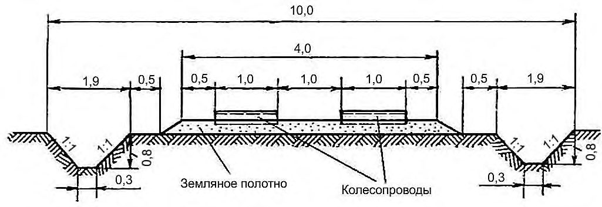
Рисунок 10.2 -Поперечный профиль лесных дорог из железобетонных плит для условий типа местности III со слабыми грунтами, не пригодными для укладки в земляное полотно
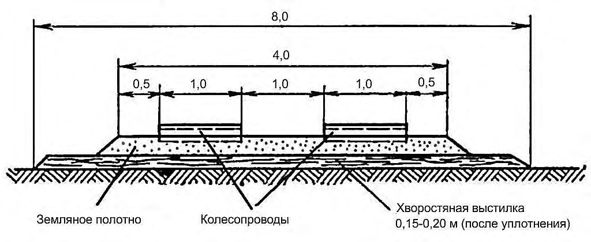
Рисунок 10.3 -Поперечный профиль лесных дорог из деревянных щитов на болотах типа II с толщиной торфа до 2 м
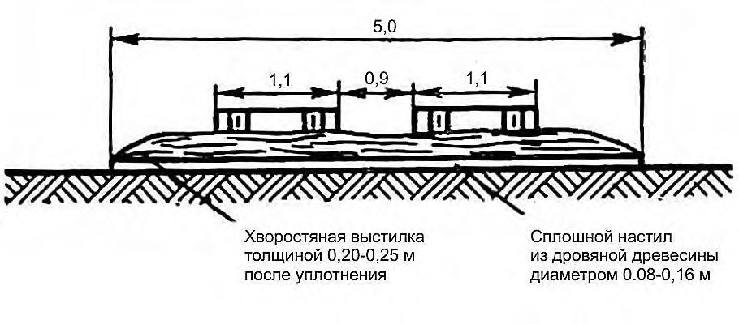
Рисунок 10.4 -Поперечный профиль лесных дорог из деревянных щитов на болотах типа II с толщиной торфа свыше 2 м
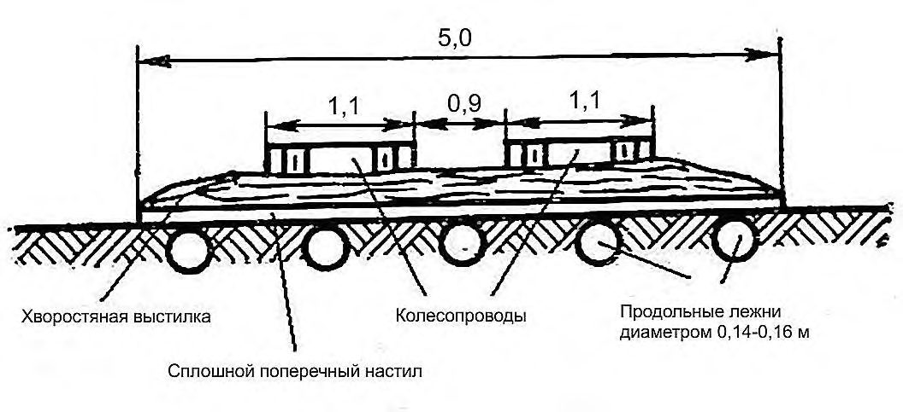
1 - хворостяная выстилка; 2 - земляное полотно; 3 - гравийное покрытие
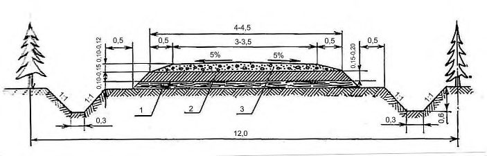
Рисунок 10.5 -Поперечный профиль дороги, рекомендуемый к применению на болотах типа I
1 - хворостяная выстилка или геотекстильный материал; 2 - земляное полотно; 3 - гравийное покрытие
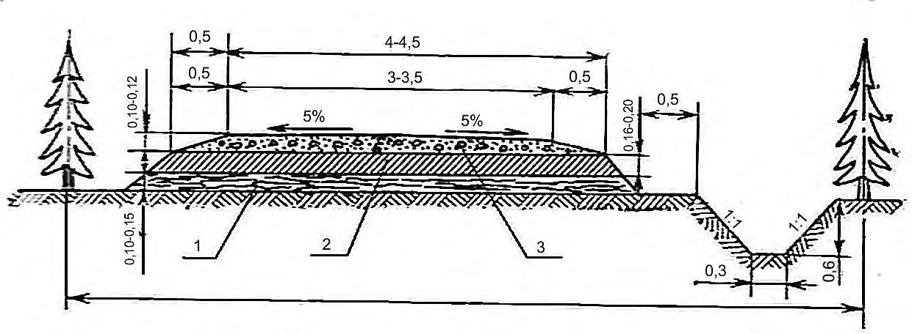
Рисунок 10.6 -Поперечный профиль дороги для участков местности типа II с поперечным уклоном более 1:25
1 - хворостяная выстилка; 2 - земляное полотно; 3 - гравийное покрытие
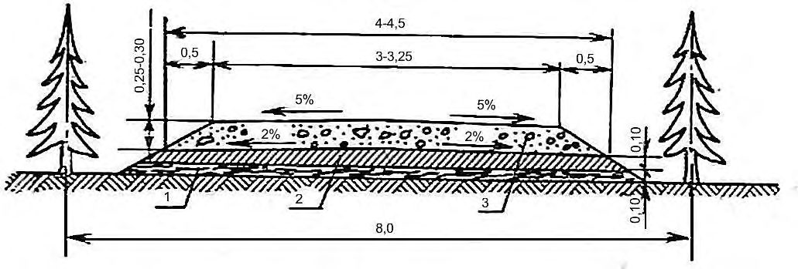
Рисунок 10.7 -Поперечный профиль дороги, рекомендуемый для применения на болотах типа I
10.2Конструкции зимних лесовозных дорог
10.2.1 Общие указания
10.2.1.1 Зимние лесные дороги для вывозки древесины строят как самостоятельные дороги (зимник) или как продолжение лесных дорог круглогодового действия (зимняя лесовозная ветка).
- 10.2.1.2 Зимние лесовозные дороги устраивают для освоения лесных массивов зимней заготовки, расположенных на землях типа местности III, доступ к которым связан с преодолением значительных заболоченных участков.
- 10.2.1.3 Зимник проектируют двухполосным: одна полоса для грузового, а другая - для порожнего направлений. Обе дороги, как правило, располагают в одной просеке. Полосу, предназначенная для грузового движения, устраивают снежно-ледяной, а полоса для порожнего направления может быть снегоуплотненной.
- 10.2.1.4 Зимние дороги устраивают двух видов: снегоуплотненные и снежно-ледяные. Снегоуплотненные дороги строят путем уплотнения снега. Уплотнять снег на полотне дороги целесообразно при толщине снегового покрова до 0,10-0,15 м. Если снегопад или метель продолжаются, работы по уплотнению не прекращают, так как укатка слоя снега толщиной более 0,25 м не дает требуемого эффекта. Уплотнение снега тонкими слоями рекомендуется осуществлять прицепными пневмокатками массой 10-15 т, пригруженными трайлерами, гладкими катками с набитыми на валец в шахматном порядке продольными рейками, пригруженными многополозными санями с трапецеидальным сечением полоза и другими устройствами. Снег слоями толщиной более 0,25 м уплотняют после предварительного рыхления и перемешивания его ребристыми металлическими катками, навешиваемыми на бульдозер вместо отвала; к указанному агрегату целесообразно прицеплять легкую гладилку или многополозные сани для частичного обжатия разрыхленного снега. Для предупреждения образования на поверхности полотна ям, выбоин, колей, ухабов, проломов и т. п. толщину тщательно уплотненного снежного покрытия ограничивают 0,20-0,25 м. Для существенного увеличения прочности снежного покрытия желательно по возможности поливать уплотненный снег водой из расчета 2-4 л на 1 м² покрытия.
10.2.1.5 Снежно-ледяные дороги устраивают путем поливки проезжей части дороги водой. Если основание дороги покрыто слоем снега, его нужно предварительно уплотнить, так же как при строительстве снегоуплотненных дорог. Поливку дороги водой проводят через 12-16 ч после уплотнения снега. Для полива могут быть использованы вакуум-цистерны, монтируемые на автомобилях и оборудованные устройствами для забора и слива воды, автополивщики, поливочные машины или цистерны, устанавливаемые на тракторных санях.
Наиболее благоприятная температура воздуха для полива - от минус 5 ºС до минус 18 ºС. При первой поливке расход воды должен составлять 5-6 м³ на 100 м дороги при ширине поливаемой полосы 3,0 м (15-20 л на 1 м² проезжей части дороги). При последующих поливках расход воды уменьшают в три раза. Движение по дороге разрешается начинать только после полного замерзания воды.
10.2.2 Конструкции поперечного профиля зимних дорог
10.2.2.1 Поперечный профиль зимних дорог на участках типа местности III с постоянным избыточным увлажнением.
При устройстве основания зимней дороги на участках типа местности III проводят корчевку пней, планировку поверхности, устройство насыпей и выемок.
Земляное полотно грузовой и порожняковой полос проектируют по возможности в нулевых отметках, за исключением снегозаносимых участков, на которых полотно следует проектировать в насыпях высотой не менее расчетной толщины снежного покрова, но не менее 0,6 м. На рисунке 10.8 показана конструкция поперечного профиля в насыпи из снега.
1 - существующий снежный покров; 2 - насыпь из уплотненного снега; 3 - ледяное
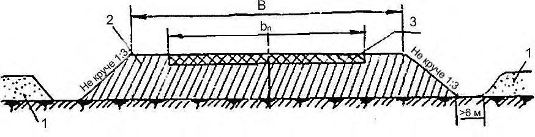
полотно п - ширина проезжей части, равная 3,5
В - ширина снежного полотна, равная 5,0 м; b м
Рисунок 10.8 -Поперечный профиль автозимника в насыпи из снега
10.2.2.2 На рисунке 10.9 изображен поперечный профиль двухпутного зимника в нулевых отметках.
Рисунок 10.9 -Двухпутный зимник в нулевых отметках
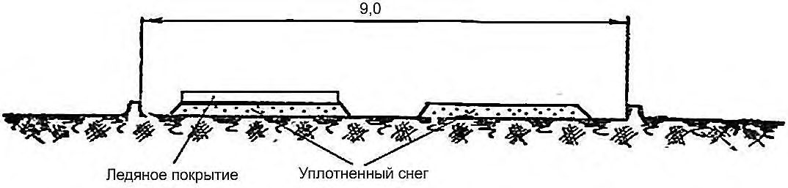
10.2.2.3 На рисунке 10.10 изображен поперечный профиль двухпутного зимника с устройством насыпи.
Рисунок 10.10 -Поперечный профиль двухпутного зимника с устройством насыпи
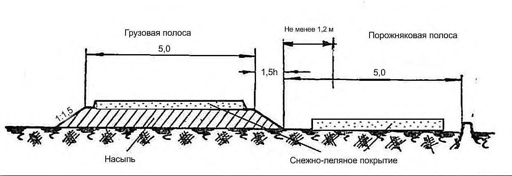
10.2.2.4 На рисунке 10.11 изображен поперечный профиль двухпутного зимника с устройством выемки.
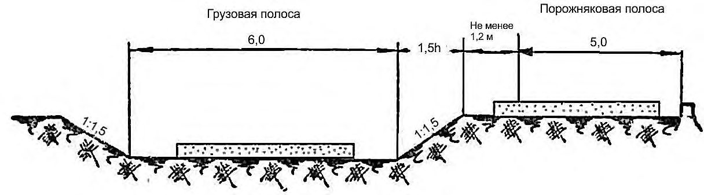
h - высота порожняковой полосы
Рисунок 10.11 -Поперечный профиль двухпутного зимника с устройством выемки
- 10.2.2.5 На рисунке 10.12 изображен поперечный профиль порожняковой зимней и грузовой летней дорог в одной просеке.
Рисунок 10.12 -Поперечный профиль порожняковой зимней и грузовой летней дорог в одной просеке
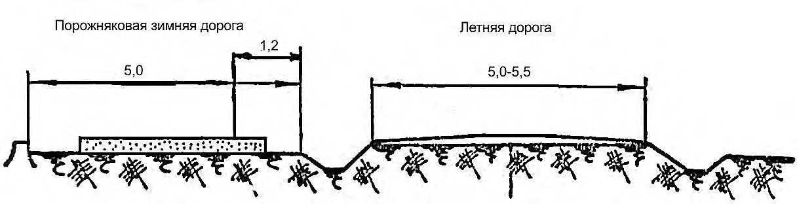
10.2.3 Устройство зимних дорог на болотах
- 10.2.3.1 Устройство зимних дорог на болотах проводят с учетом глубины болота, свойства торфа и его промерзаемости без выторфовывания.
СП 288.1325800.2016
10.2.3.2 По условиям устойчивости консистенции болота применяют классификацию болот по трем типам:
- тип I - сплошь заполненные торфом устойчивой консистенции, подстилаемые достаточно плотными минеральными грунтами;
- тип II -заполненные торфом неустойчивой консистенции, подстилаемые органическими или полуорганическими илами (сапропелями);
- тип III - заполненные жидким торфом с плавающей торфяной корой (сплавиной).
10.2.3.3 При устройстве зимних дорог на хорошо промерзающих болотах типа I при толщине торфа до 1,0 м устраивают хворостяную выстилку, которую уплотняют продольными ходами трактора (три-четыре раза). Толщина слоя хворостяной выстилки после ее уплотнения должна составлять 0,2-0,3 м.
10.2.3.4 На хорошо промерзающих болотах, болотах типа II при толщине торфа от 1 до 2 м укладывают продольные лаги через 0,5 м, а по ним устраивают хворостяную выстилку, которую также уплотняется. На медленно промерзающих болотах при толщине торфа более 2 м укладывают продольные лаги, а по ним устраивают сплошной настил (слань) из тонкомерных бревен.
10.2.3.5 С наступлением морозов в целях ускорения промерзания и пуска в эксплуатацию зимней дороги проводят проминку подготовленного основания, которая продолжается до образования промерзшего слоя, выдерживающего прохождение транспортной техники. Проминку осуществляют гусеничными или колесными тракторами, работающими с прицепными катками.
10.2.3.6 Поперечный профиль зимней дороги на болотах при толщине торфа до 1 м изображен на рисунке 10.13.
Рисунок 10.13 Поперечный профиль зимней дороги на болотах при толщине торфа до 1 м
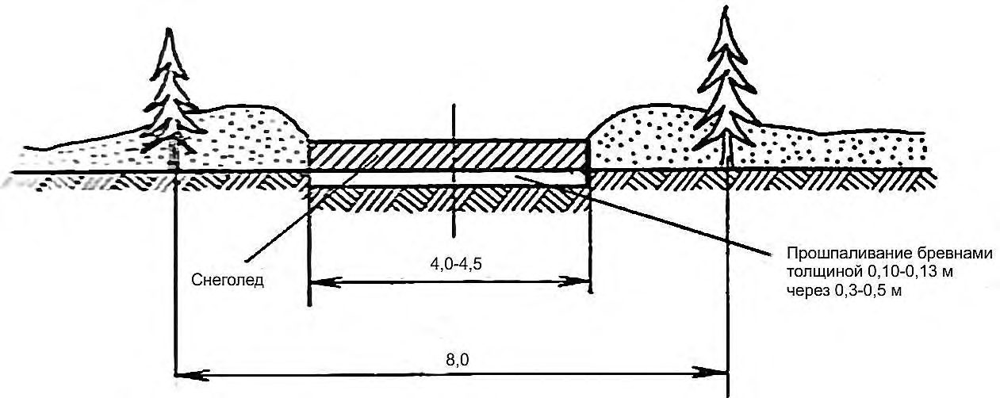
10.2.3.7 На рисунке 10.14 изображен поперечный профиль зимней дороги, проложенной по болоту с толщиной торфа от 1 до 2 м.
Рисунок 10.14 -Поперечный профиль зимней дороги на болотах при толщине торфа от 1 до 2 м
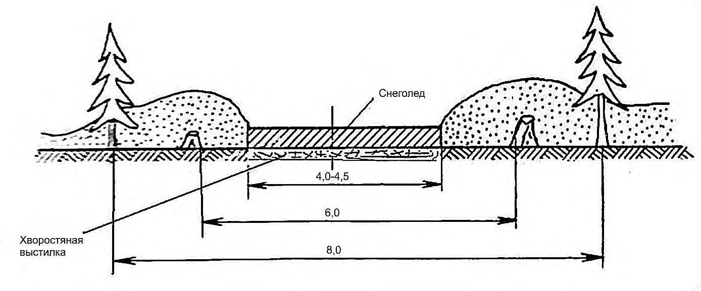
10.2.3.8 Поперечный профиль зимней дороги, проложенной на медленно промерзающих болотах типа II при толщине торфа свыше 2,0 м изображен на рисунке 10.15. В целях сокращения затрат на строительство трассу прохождения зимника, изображенного на рисунке 10.15, следует выбирать в наиболее узком месте болота.
Рисунок 10.15 -Поперечный профиль зимней дороги на болотах при толщине торфа свыше 2 м
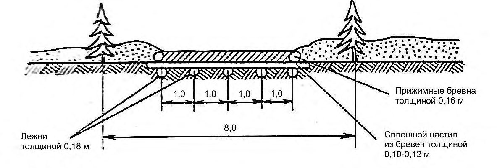
10.2.3.9 Ширину просеки при устройстве зимних дорог устанавливают:
- при устройстве грузового и порожнякового путей в одной просеке - 14 м;
- при устройстве грузового и порожнякового путей в разных просеках: для грузового пути - 8 м, для порожнякового - 6,0 м.
10.3Строительство и содержание временных летних лесовозных дорог
1,2 - для лесных дорог категории I-ЛB;
1,0 - для лесных дорог категории II-ЛB;
0,8 - для лесных дорог категорий III-ЛB, I-ЛХ, II-ЛХ;
0,7 - для летних усов;
0,5 - для зимних дорог.
10.4Строительство и содержание зимних лесовозных дорог
10.4.1 Защита дорог от снежных заносов
10.4.1.1 Непрерывное и безопасное движение автомобилей по дорогам в зимний период обеспечивается выполнением комплекса мероприятий, предусматривающих работы по защите дорог от снежных заносов, очистке от снега проезжей части и обочин в период снегопадов, предупреждению и ликвидации зимней скользкости на основе метеоданных и контроля состояния автомобильной дороги и искусственных сооружений, а также ряда организационных мер по обеспечению надежной работы автомобильных дорог.
10.4.1.2 Оперативное руководство работами по зимнему содержанию дорог осуществляется владельцами дорог на основе данных гидрометеослужбы и фактического состояния поверхности дороги.
10.4.1.3 Заносимые места на дороге устанавливают на основании данных диагностики ее транспортно-эксплуатационного состояния и наблюдений. При этом определяют причины образования снежных заносов и разрабатывают мероприятия по устранению или уменьшению заносимости, приоритетность которых представлена в таблице 10.2.
Таблица 10.2
| Очередность проведения мероприятий | Категория снегозаносимости участков | Краткая характеристика параметров |
|---|---|---|
| Первая очередь | Сильнозаносимые | Нераскрытые выемки, снегоемкость подветренного откоса которых меньше суммарного объема снега, приносимого метелями и выпадающего при снегопадах. Все выемки на кривых |
| Вторая очередь | Среднезаносимые | Полувыемки-полунасыпи. Раскрытые выемки. Нулевые места и насыпи высотой менее высоты снежного покрова |
| Третья очередь | Слабозаносимые | Пересечения в одном уровне. Насыпи с ограждениями безопасности. Насыпи, имеющие высоту, равную высоте снежного покрова |
| Четвертая очередь | Незаносимые | Насыпи высотой более высоты снежного покрова |
10.4.1.4 Защиту дорог от снежных заносов осуществляют снегозащитными средствами, размещаемыми на прилегающих к дороге землях с наветренной стороны от заносимого участка. Снегозащитные средства размещают на постоянной или временной основе (на период зимней эксплуатации). В качестве средств защиты от снежных заносов на лесных дорогах применяют переносные щиты и снежные траншеи (валы).
10.4.1.5 Переносные щиты размещают на расстоянии не ближе 30 м от бровки земляного полотна в один-три ряда. При установке в один ряд линия защиты высотой 1,5 м рассчитана на объем снегоприноса до 70 м³ /м, а высотой 2,0 м - на объем до 90 м³ /м без перестановки. При многократной перестановке щитов на вершину снежного вала снегоемкость защиты из планочных щитов возрастает в два и более раз.
10.4.1.6 Снежные траншеи и валы из снега могут применяться при толщине снежного покрова более 0,2 м как в качестве самостоятельного средства защиты так и в качестве усиления других средств снегозащиты. Допускается устройство не менее трех траншей, прокладываемых параллельно на расстоянии 30 м от бровки земляного полотна или линии защиты, эффективность действия которой следует увеличить. Расстояние между отдельными траншеями должно составлять 8-15 м.
Так как снегоемкость одной траншеи составляет 2-3 м³ /м, то для обеспечения эффективности снегозадержания необходимо регулярное их возобновление.
10.4.2 Очистка автомобильных лесных дорог от снега и борьба с зимней скользкостью
10.4.2.1 Очистку автомобильных дорог от снега и снежных заносов проводят всеми имеющимися в распоряжении владельца дороги снегоочистительными средствами - бульдозерами, плужными и плужнощеточными снегоочистителями на колесной и гусеничной базе, автогрейдерами, прицепными самодельными угольниками.
10.4.2.2 Очистку дорог проводят во время или после снегопада, как правило, в ночное время, чтобы не затруднять работу лесовозного транспорта, доставку рабочих к месту работы и технических грузов.
10.4.2.3 Мероприятия по предотвращению и ликвидации зимней скользкости включают в себя:
- повышение шероховатости покрытия проезжей части путем распределения фрикционных материалов (песок, высевки, щебень, шлак);
- профилактическую обработку проезжей части противогололедными химическими веществами;
- обработку образовавшегося ледяного или снежноледяного слоя противогололедными химическими веществами.
Обработку проезжей части химическими веществами следует проводить только на дорогах с твердым покрытием в случаях отсутствия фрикционных материалов.
10.4.2.4 В целях предупреждения образования снежно-ледяных отложений распределение противогололедных химических материалов проводят или превентивно (основываясь на метеопрогнозе), или непосредственно с момента начала снегопада (для предупреждения образования снежного наката).
Распределение противогололедных химических материалов во время снегопада позволяет сохранить выпадающий снег в рыхлом состоянии. После прекращения снегопада образовавшуюся на дороге снежную массу удаляют последовательными проходами снегоочистителей.
10.4.2.5 При отсутствии чистых химические материалов применяют пескосоляную смесь. Ее следует готовить путем смешения песка с кристаллической солью (чаще всего NaCl) в отношении от 90:10 до 80:20 (по массе песка и чистой соли соответственно).
Распределение пескосоляной смеси следует проводить в количестве 350 г/м² и 175 г/м² при соотношении компонентов песка и соли 90:10 и 80:20.
10.4.2.6 В целях снижения коррозионного воздействия на транспортные средства, а также элементы искусственных сооружений рекомендуется использовать химические вещества, не вызывающие коррозию, или ингибированные материалы.
10.4.2.7 На гравийных, щебеночных и грунтовых дорогах в качестве фрикционных материалов применяют песок, каменные высевки, щебень и шлак. Рекомендуют использовать материалы без примесей глины или золы, а размер части фрикционного материала должен быть менее 5 мм.
10.4.2.8 Борьбу с зимней скользкостью необходимо проводить в первую очередь на потенциально опасных участках: на подъемах и спусках с большими уклонами, на горизонтальных кривых малого радиуса, на участках с недостаточной видимостью в плане или профиле, на пересечениях в одном уровне, на мостах и подходах к ним.
11Полоса отвода земель
Для постройки автомобильной лесной дороги на землях лесного фонда ширину дорожной полосы устанавливают не менее суммарной ширины просеки и полосы насаждений, оставляемых для защиты полотна дороги от снежных заносов. Ширину просеки устанавливают с учетом размещения всех сооружений и устройств дороги, намеченных способов производства работ по возведению земляного полотна, но не менее:
- 30 м - для лесных дорог категорий I-ЛВ и II-ЛВ;
- 12 м - для лесных дорог категорий III-ЛВ и IV-ЛВ.
Ширину защитной полосы леса устанавливают в соответствии с нормами лесохозяйственного регламента лесничества, на территории которого осуществляется строительство лесной дороги.
Ширину полосы отвода земель вне земель лесного фонда устанавливают в соответствии с поперечными профилями земляного полотна проектируемой дороги с учетом прилегающих к земляному полотну водоотводных канав и других сооружений и устройств. При этом расстояние от подошвы насыпи или бровки выемки, а при наличии резервов, кавальеров и водоотводных канав - от ближайших крайних их точек до границы полосы отвода следует устанавливать не менее 2 м, а в исключительных случаях - 1м.
При прохождении трассы по землям, используемым под особо ценные культуры, а также в стесненных условиях в пределах населенных пунктов допускается проектировать земляное полотно без резервов и кавальеров, заменять водоотводные канавы лотками и в особо стесненных условиях устраивать подпорные стенки.
Ширину полосы отвода в местах, подверженных снежным заносам, устанавливают с учетом ширины полосы, необходимой для установки снегозащитных устройств.
На поймах, вблизи оврагов, на оползневых косогорах и тому подобных местах полосу отвода устанавливают с расчетом размещения укрепительных сооружений, в том числе защитных сооружений.
Прилегающие к дороге лесные участки, вырубка которых может отразиться на устойчивости склонов гор и косогоров и привести к образованию оползней и оплывов, вызвать появление селевых потоков и снежных обвалов, следует выделять в специальные зоны, не включаемые в полосу отвода.
Таблица А.1
| Дорожно- климатическая зона* | Примерная географическая граница и краткая характеристика дорожно-климатической зоны |
|---|---|
| I | Севернее линии Мончегорск - Поной - Несь - Ошкурья - Сухая - Тунгуска - Канск - государственная граница - Биробиджан - Де-Кастри. Включает в себя географические зоны тундры, лесотундры и северовосточную часть лесной зоны с распространением вечномерзлых грунтов |
| II | От границы зоны I до линии Житомир - Тула - Нижний Новгород - Ижевск - Кыштым - Томск - Канск до государственной границы. Включает в себя географическую зону лесов с избыточным увлажнением грунтов |
| III | От границы зоны II до линии Кировоград - Белгород - Самара - Магнитогорск - Омск - Бийск - Туран. Включает в себя лесостепную географическую зону со значительным увлажнением грунтов |
| IV | От границы зоны III до линии Буйнакск - Волгоград, далее проходит на 200 км южнее линии Уральск - Актюбинск. Включает в себя географическую степную зону с недостаточным увлажнением грунтов |
| V | Расположение к юго-западу и югу от границы зоны IV. Включает в себя пустынную и пустынно-степную географические зоны с засушливым климатом и распространением засоленных грунтов |
Примечания
- 1 Кубань и западную часть Северного Кавказа следует относить к дорожноклиматической зоне III.
- 2 При проектировании участков дорог в приграничных зонах при обосновании грунтово-гидрологических и почвенных условий, а также исходя из практики эксплуатации дорог в районе допускается принимать проектные решения, как для смежной (северной или южной) зоны.
АПриложение А (справочное). Дорожно-климатическое районирование
Риунок А.1 -Дорожно-климатическое районирование
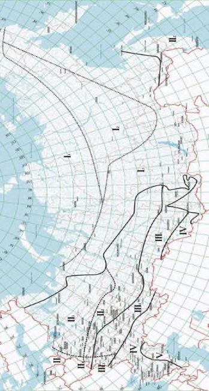
БПриложение Б (справочное). Типы местности по характеру и степени увлажнения
Таблица Б.1
| Тип местности | Характеристика местности | Признаки увлажнения |
|---|---|---|
| I | Сухие места без избыточного увлажнения | Поверхностный сток обеспечен и грунтовые воды не оказывают существенного влияния на увлажнение верхней толщи грунтов* |
| II | Сырые места с увлажнением в отдельные периоды года | Поверхностный сток не обеспечен, но грунтовые воды не оказывают существенного влияния на увлажнение верхней толщи грунтов*; почвы с признаками поверхностного заболачивания. Весной и осенью появляется застой воды на поверхности |
| III | Мокрые места с постоянным избыточным увлажнением | Грунтовые воды или длительно стоящие (более 20 сут) поверхностные воды влияют на увлажнение верхней толщи грунтов; торфяные оглеенные почвы с признаками заболачивания, а также солончаки и постоянно орошаемые территории засушливой зоны |
| * В случаях, если уровень грунтовых вод в предморозный период залегает ниже расчетной глубины промерзания: на 2 м и более в глинах, тяжелых пылеватых и тяжелых суглинках; на 1,5 м и более в легких пылеватых и легких суглинках, тяжелых пылеватых и пылеватых супесях; на 1,0 миболее в легких, легких крупных супесях и пылеватых песках. | * В случаях, если уровень грунтовых вод в предморозный период залегает ниже расчетной глубины промерзания: на 2 м и более в глинах, тяжелых пылеватых и тяжелых суглинках; на 1,5 м и более в легких пылеватых и легких суглинках, тяжелых пылеватых и пылеватых супесях; на 1,0 миболее в легких, легких крупных супесях и пылеватых песках. | * В случаях, если уровень грунтовых вод в предморозный период залегает ниже расчетной глубины промерзания: на 2 м и более в глинах, тяжелых пылеватых и тяжелых суглинках; на 1,5 м и более в легких пылеватых и легких суглинках, тяжелых пылеватых и пылеватых супесях; на 1,0 миболее в легких, легких крупных супесях и пылеватых песках. |
ВПриложение В. Классификация грунтов для проектирования и сооружения земляного
(обязательное) полотна
В.1 Классификация глинистых грунтов приведена в таблице В.1.
Таблица В.1
| Показатели | Показатели | |
|---|---|---|
| Наименование видов глинистых грунтов | Число пластичности | Содержание песчаных частиц размером от 2 до 0,05 мм, %массы сухого грунта |
| Легкая крупная супесь | 1-7 | Свыше 50 |
| Легкая супесь | 1-7 | Свыше 50 |
| Пылеватая супесь | 1-7 | 20-50 |
| Тяжелая пылеватая супесь | 1-7 | До 20 |
| Легкий суглинок | 7-12 | Свыше 40 |
| Легкий пылеватый суглинок | 7-12 | До 40 |
| Тяжелый суглинок | 12-17 | Свыше 40 |
| Тяжелый пылеватый суглинок | 12-17 | До 40 |
| Песчанистая глина | 17-27 | Свыше 40 |
| Пылеватая глина | 17-27 | Меньше, чем пылеватых размером 0,05-0,005 мм |
| Жирная глина | Свыше 27 | Не нормируется |
Окончание таблицы В.1
Примечания
1 При содержании частиц крупнее 2 мм в количестве 20 % - 50 % наименование грунта дополняют словом «гравелистый» при окатанных частицах и «щебенистый» при острореберных, неокатанных частицах.
2 Для легких крупных супесей предусмотрено содержание частиц размером 2,00-0,25 мм, для остальных грунтов - размером 2,00-0,05 мм.
В.2 Распределение частиц по крупности для несцементированных обломочных грунтов (класса IV классификации строительных грунтов) приведено в таблице В.2.
Таблица В.2
| Наименование видов несцементированных обломочных грунтов | Распределение частиц по крупности, %массы сухого грунта |
|---|---|
| Крупнообломочные | Крупнообломочные |
| Глыбовый грунт (при преобладании окатанных камней - валунный) | Масса камней крупнее 200 мм составляет более 50% |
| Щебенистый грунт (при преобладания окатанных частиц - галечниковый) | Масса частиц крупнее 10 мм составляет более 50% |
| Дресвяный грунт (при преобладании окатанных частиц - гравийный) | Масса частиц крупнее 2 мм составляет более 50% |
| Песчаные | Песчаные |
| Гравелистый песок: | Масса частиц крупнее 2 мм составляет менее 50 %, но более 25% |
| - крупный | Масса частиц крупнее 0,5 мм составляет более 50% |
| Песок средней крупности | Масса частиц крупнее 0,25 ммсоставляет более 50% |
| - мелкий | Масса частиц крупнее 0,1 мм составляет более 75% |
| - пылеватый | Масса частиц крупнее 0,1 мм составляет менее 75% |
Окончание таблицы В.2
Примечание - Для установления наименования грунта по настоящей таблице последовательно суммируют проценты содержания частиц исследуемого грунта: сначала крупнее 10 мм, затем крупнее 2 мм, далее крупнее 0,5 мм и т. д. Наименование грунта принимают по первому удовлетворяющему показателю в порядке расположения наименований в настоящей таблице.
ГПриложение Г. (справочное)
Определение видимости дороги в плане
Рисунок Г.2 -Схема расчета обеспечения видимости в плане
Если s > k , находят расстояние видимости по рисунку 2а):
Если s < k , находят расстояние видимости по рисунку 2б):
В зоне пересечения или примыкания необходимо обеспечить видимость водителям, подъезжающим по главной и второстепенной дорогам, исходя из условия остановки автомобилей до пересекаемых полос движения (рисунок Г.3). а) На пересечениях автомобильных дорог в одном уровне
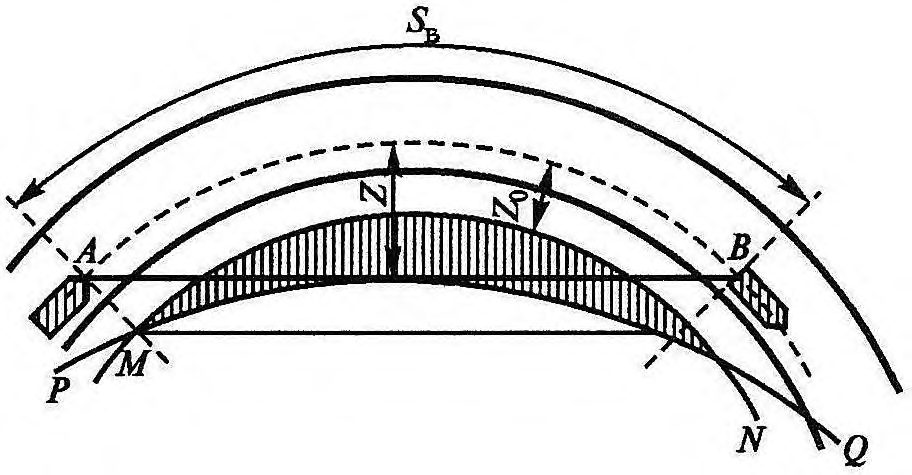
б) На примыканиях автомобильных дорог в одном уровне
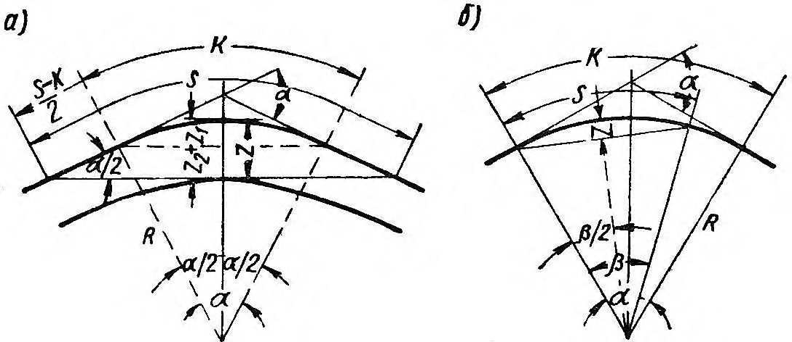
L А и L Д - расстояние видимости поверхности дороги; L б - расстояние боковой видимости; граница зоны видимости показана пунктиром
Рисунок Г.3 -Схемы обеспечения видимости
Расстояния видимости поверхности дорог LА и LД должны соответствовать расчетным скоростям движения на пересекаемых дорогах (А-А и Д-Д) и продольным уклонам на подходах.
Таблица Д.1
| Грунты насыпи | Наибольшая крутизна откосов при высоте откоса насыпи, м | Наибольшая крутизна откосов при высоте откоса насыпи, м | Наибольшая крутизна откосов при высоте откоса насыпи, м |
|---|---|---|---|
| До 12 | До 12 | ||
| До 6 | в нижней части (0-6) | в верхней части (6-12) | |
| Крупнообломочные и песчаные (за исключением мелких и пылеватых песков) | 1:1,5 | 1:1,5 | 1:1,5 |
| Песчаные мелкие и пылеватые и лессовые 1) | 1:1,5 1:1,75 | 1:1,5 1:2 | 1:1,5 1:1,75 |
1) В числителе приведены значения для пылеватых разновидностей грунтов в дорожно-климатических зонах II III и для одноразмерных мелких песков.
Примечание
Высота откоса насыпи определяют по разности отметок верхней и нижней бровок откоса. При наличии косогорности высоту откоса насыпи определяют по разности отметок верхней и нижней бровок откоса.
Наибольшую крутизну откоса насыпей из мелких (барханных песков в районах с засушливым климатом) назначают 1:2 независимо от высоты.
Таблица Д. 2
| Грунты выемки | Высота откоса, м | Наибольшая крутизна откосов 1) |
|---|---|---|
| Песчаные, глинистые однородные, твердой, полутвердой и тугопластичной консистенции | До 12 | 1:2 |
| Пески мелкие | До 2 | 1:4 |
| Пески мелкие | 2-12 | 1:2 |
| Лесс | До 12 | 1:1 - 1:1,05 |
| Лесс | До 12 | 1:0,5 - 1:1,5 |
Примечание
В скальных слабовыветривающихся грунтах допускаются вертикальные откосы, а для территорий с закрепленными растительными песками допускается наибольшую крутизну при высоте откоса до 12 м принимать 1:2.
Высоту откоса выемки определяют по разности отметок верхней и нижней бровок откоса. В случае косогорности при пользовании настоящей таблицей в расчет берут верхний откос.
ДПриложение Д. (обязательное) Крутизна откосов насыпей и выемок
ЕПриложение Е (справочное). Характеристики транспортных средств, используемых для вывозки лесных и технических грузов
На лесных дорогах, предназначенных для вывозки заготовленной древесины, основным транспортным средством являются лесовозные автопоезда, составляющие до 80 % интенсивности движения. Кроме того, по лесной дороге осуществляют перевозку технических грузов, преимущественно лесозаготовительной техники, и доставку рабочих к местам работ. Схемы автопоездов для вывозки длинномерных лесных грузов (хлыстов) показаны в таблице Е.1.
Таблица E.1 - Схемы автопоездов для перевозки хлыстов
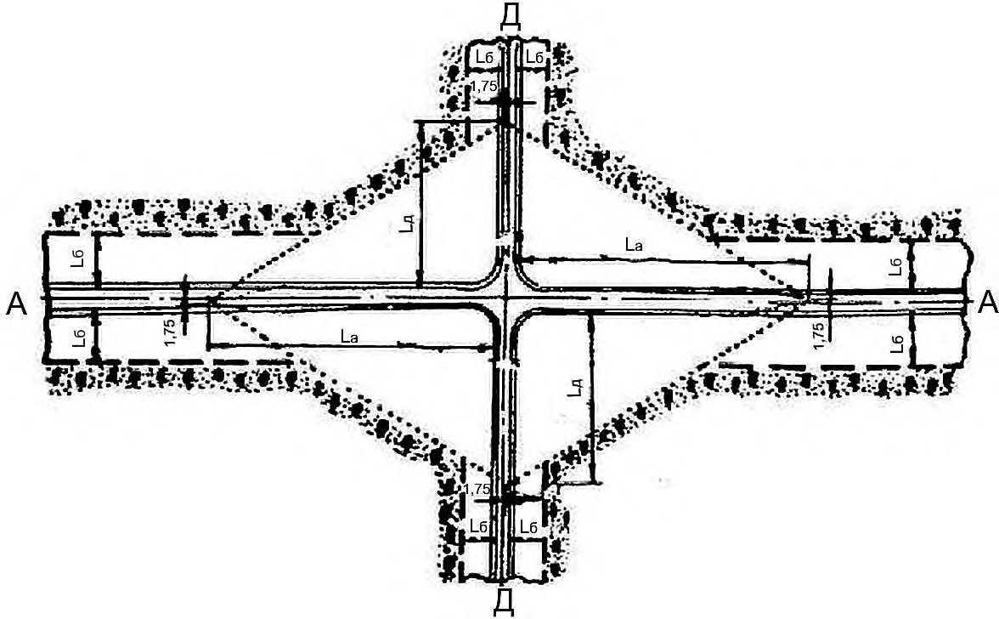
Окончание таблицы Е.1
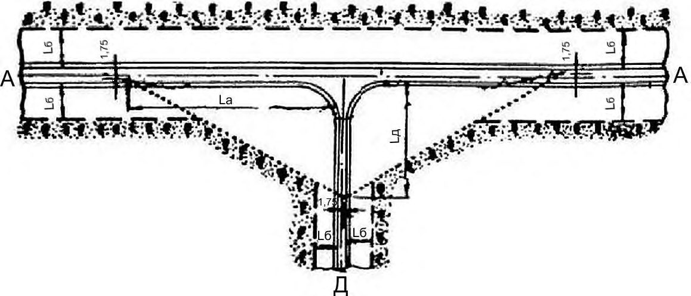
Схемы автопоездов для перевозки лесных грузов в сортиментах представлены в таблице Е.2.
Таблица E.2 - Схемы автопоездов для перевозки сортиментов
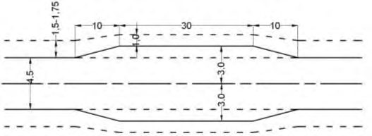
Основными характеристиками специализированного транспорта, определяющими параметры продольного и поперечного профилей дороги и конструкцию верхнего строения, являются габаритные размеры автопоезда
(длина, ширина, высота), полная масса автопоезда, наибольшая нагрузка на ось, грузоподъемность и максимальная скорость.
Весовые, габаритные и скоростные параметры специализированных автопоездов приведены в таблице Е.3.
Таблица E.3 - Параметры специализированных автопоездов, применяемых на лесных дорогах для вывозки лесных грузов
| № схемы | Колесная формула | Снаряженная масса,т | Снаряженная масса,т | Грузоподъемность, т | Грузоподъемность, т | Полная масса, т | Полная масса, т | Полная масса, т | Осевая нагрузка, т | Осевая нагрузка, т | Габаритные размеры, мм | Скорость км/ч |
|---|---|---|---|---|---|---|---|---|---|---|---|---|
| № схемы | Колесная формула | тягача | прицепа | тягача | прицепа | тягача | прицепа | а/поезда | тягача | прицепа | Габаритные размеры, мм | Скорость км/ч |
| 1 | 8×4 | 8,8-9,0 | 3,0-3,4 | 5,4-6,0 | 8,5 | 14,2-15,0 | 11,5-11,9 | 25,7-26,9 | 9-10 | 5,7-6,0 | 2500-2600 | 60-65 |
| 2 | 10×4 | 12,4-12,6 | 3,4-3,8 | 10-15 | 10,8-16,5 | 23,2-27,6 | 14,2-20,3 | 37,4-47,9 | 7-8 | 7,1-10,1 | 2500-3200 | 70-80 |
| 2 | 10×6 | 12,1-12,8 | 3,8-4,7 | 16,5-26,0 | 16-26 | 28,6-38,8 | 19,8-30,7 | 48,4-69,5 | 10,7-13,0 | 10-15 | 2550-3200 | 70-80 |
| 3 | 12×8 | 11,2-14 | 4,1-4,7 | 10-28 | 16,2-20,0 | 21,2-42,0 | 20,3-24,7 | 41,5-66,7 | 5-10 | 10-12 | 2550 | |
| 3 | 12×8 | 20 | 4,7 | 40 | 20 | 60 | 24,7 | 84,7 | 15 | 12,4 | 2550-3200 | 72-80 |
| 4 | 14×6 | 14 | 2,0×4,5 | 19,3 | 2,0×13,5 | 33,5 | 36 | 71 | 13 | 9 | 2500 | |
| 5 | 16×8 | 20 | 2,0×4,7 | 40 | 2×20 | 60 | 49,4 | 109,4 | 15 | 12,4 | 2600 | 65 |
| 6 | 8×4 | 9,7-9,9 | 3,0-3,2 | 6,0-6,3 | 8,0-8,5 | 15,7-16,2 | 11,0-11,7 | 26,7-27,9 | 10 | 5,5-5,8 | 2500 | |
| 6 | 10×4, 10×6 | 9,2-11,0 | 3,0-3,2 | 5,2-6,5 | 8,0-8,5 | 14,4-17,6 | 11,0-11,7 | 25,4-29,3 | 6,5 | 5,5-5,8 | 2500 | 65-75 |
| 7 | 10×4, 10×6 | 9,3-14,5 | 4-5 | 10-14 | 12-15 | 19,3-28,5 | 16-20 | 35,3-48,5 | 9-11 | 8-10 | 2550 | 75-90 |
| 7 | 12×4, 12×6 | 12,2-14 | 7,8-9,0 | 19,3-23,0 | 22,2-28,5 | 31,5-37,0 | 30,0-37,5 | 61,5-74,5 | 13 | 10-13 | 2500 | 96 |
| 7 | 14×4, 14×6 | 10,5-12,2 | 7,9-8,0 | 21,1-23,0 | 28,0-28,1 | 31,6-35,2 | 35,9-36,1 | 67,5-71,3 | 13 | 9 | 2550 | 96 |
| 7 | 16×8 | 12-16 | 7,9-12,0 | 28-40 | 28-40 | 40-56 | 36-52 | 76-108 | 15 | 9-13 | 2500-2900 | 60-90 |
| 8 | 10×4, 10×6 | 7,7-11,8 | 8,5 | 15,0-21,5 | 30 | 22,7-33,3 | 38,5 | 61,2-71,8 | 8,7-10,7 | 19,2 | 2500 | 60-90 |
| 8 | 12×4, 12×6 | 9,3-11,8 | 9,0-9,5 | 15,9-21,5 | 35-40 | 25,2-33,3 | 44,0-49,5 | 69,2-82,8 | 12-14 | 10-13 | 2550-3300 | 75-90 |
| 8 | 14×8 | 10-14 | 9,0-9,5 | 20-32 | 35-40 | 30-46 | 44,0-49,5 | 74,0-95,5 | 15 | 10-13 | 2550-3300 | 75-90 |
Рисунок Ж.1 - Схемы разъездов и карманов
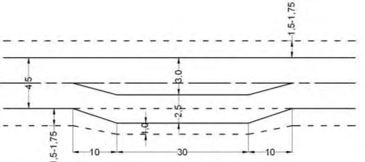
Библиография
- [1] ВСН 7-82 Инструкция по проектированию лесохозяйственных автомобильных дорог
- [2] ВСН 01-82 Инструкция по проектированию лесозаготовительных предприятий
- [3] Правила заготовки древесины, утвержденные приказом Федерального агентства лесного хозяйства от 1 августа 2011г. № 337
- [4] Федеральный закон от 4 декабря 2006 г. № 200-ФЗ «Лесной кодекс Российской Федерации»
- [5] Федеральный закон от 30 ноября 1994 г. № 51-ФЗ «Гражданский кодекс Российской Федерации (часть первая)»
- [6] Приказ Рослезхоза от 5 октября 2011 г. № 423 Об утверждении типовой формы и состава лесного плана субъекта Российской Федерации, порядка его подготовки (зарегистрирован в Минюсте России 12 декабря 2011 г., рег. № 22552)
- [7] Приказ Рослезхоза от 4 апреля 2012 г. № 126 Состав лесохозяйственных регламентов, порядок их разработки, сроки их действия и порядок внесения в них изменений (зарегистрирован в Минюсте России 21 мая 2012 г., рег. № 24269)
- [8] Федеральный закон от 8 ноября 2007 г. № 257-ФЗ «Об автомобильных дорогах и о дорожной деятельности в Российской Федерации и о внесении изменений в отдельные законодательные акты Российской Федерации»
- [9] Постановление Правительства Российской Федерации от 19 января 2006 г. № 20 «Об инженерных изысканиях для подготовки проектной документации, строительства, реконструкции объектов капитального строительства»
- [10] Приказ Рослезхоза от 27 апреля 2012 г. № 174 Об утверждении Нормативов противопожарного обустройства лесов (зарегистрирован в Минюсте России 7 июня 2012 г., рег. № 24488)
- [11] Федеральный закон от 14 марта 1995 г. № 33-ФЗ «Об особо охраняемых природных территориях»
- [12] ОДН 218.0.006-2002 Правила диагностики и оценки состояния автомобильных дорог. Основные положения
- [13] Федеральный закон от 23 июля 2013 г. № 196-ФЗ «О внесении изменений в Кодекс Российской Федерации об административных правонарушениях и статью 28 Федерального закона «О безопасности дорожного движения»
- [14] СН 449-72 Указания по проектированию земляного полотна железных и автомобильных дорог
- [15] МОДН 2-2001 Проектирование нежестких дорожных одежд
- [16] ОДМ 218.2.001-2009 Рекомендации по проектированию и строительству водопропускных сооружений из металлических гофрированных структур на автомобильных дорогах общего пользования с учетом региональных условий (дорожно-климатических зон)
- [17] ОДН 218.017-2003 Руководство по оценке транспортноэксплуатационного состояния мостовых конструкций
- [18] СП 32-104-98 Проектирование земляного полотна железных дорог колеи 1520 мм
- [19] ОДН 218.010-98 Инструкция по проектированию, строительству и эксплуатации ледовых переправ
- [20] ПУЭ Правила устройства электроустановок (6 и 7-е издания)
- [21] МС РФ АООТ «ССКТБ-ТОМАСС» Руководство по строительству линейных сооружений местных сетей связи. 4. 1, 2
- [22] РД 45.120-2000 (НТП 112-2000) Нормы технологического проектирования. Городские и сельские телефонные сети
- [23] Федеральный закон от 30 декабря 2009 г. № 384-ФЗ «Технический регламент о безопасности зданий и сооружений»
- [24] Федеральный закон от 25 июня 2002 г. № 73-ФЗ «Об объектах культурного наследия (памятниках истории и культуры) народов Российской Федерации»
- [25] Федеральный закон от 3 июня 2006 г. № 74-ФЗ «Водный кодекс Российской Федерации
- [26] ГН 2.1.5.1315-03 Предельно допустимые концентрации (ПДК) химических веществ в воде водных объектов хозяйственно-питьевого и культурно-бытового водопользования